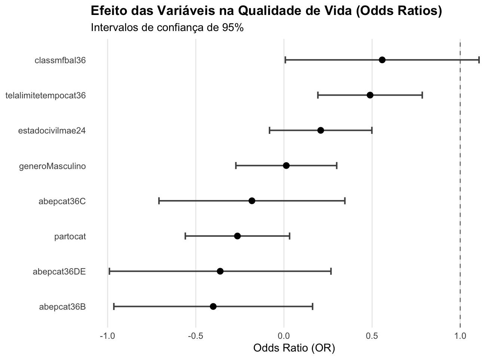

dict <-tribble(~Variavel, ~Explicacao, ~Categorias,#--- Variáveis Sociodemográficas e Perinatais ---#"idademaecat", "Categorização da idade da mãe da criança", "Adulta: 1 / Adolescente: 0","pesocat", "Categorização peso de nascimento da criança", ">= 2.500 g: 1 / < 2.500 g: 0","igcat", "Categorização da idade gestacional de nascimento da criança", ">= 37 semanas: 1 / < 37 semanas: 0","partocat", "Categorização da via de parto", "Vaginal ou fórceps: 1 / Cesariana: 0","lme6", "Criança em aleitamento materno exclusivo aos 6 meses de idade", "Sim: 1 / Não: 0","corcat24", "Categorização da etnia", "Branco: 1 / Não branco: 0","estadocivilmae24", "Estado civil da mãe da criança", "Casada ou em união estável: 1 / Solteira ou divorciada: 0","escolamaecat36", "Categorização da escolaridade da mãe da criança", "Superior/Pós: 1, Médio: 2, Fundamental: 3","abepcat36", "Categorização social pelo Critério Brasil - ABEP", "A, B, C, DE","genero", "Gênero", "Feminino/Masculino",#--- Triagem Auditiva ---#"tanu", "A criança realizou a Triagem Auditiva Neonatal Universal (TANU)?", "Sim/Não","resultadotanu", "O resultado da TANU foi normal?", "Sim ou resultado desconhecido","resultqtai36", "Resultado do QTAI aos 36 meses", "Positivo: Risco / Negativo: Sem Risco",#--- Hábitos e Ambiente da Criança ---#"creche36", "Criança frequentando creche", "Sim/Não","ludicascat36", "Categorização da quantidade de atividades lúdicas", "Adequada: 4+ / Inadequada: 1-3",#--- Uso de Telas ---#"tempotelacat36", "Categorização do tempo de tela por dia", "Usa < 1h: 1 / Usa >= 1h: 0","horacertacat36", "Categorização do horário para usar telas", "Sempre: 1 / Às vezes ou Nunca: 0","telacasa36", "Maneira que a criança usa telas em casa", "Acompanhado (adultos), Acompanhado (criança), Sozinho","telalimitetempocat36", "Cuidadores limitam o tempo de uso de telas?", "Sim: 1 / Às vezes ou Não: 0","telainteraçãocat36", "Cuidadores interagem com a criança durante o uso de telas?", "Sim: 1 / Às vezes ou Não: 0","telalimiteconteudocat36", "Cuidadores limitam os conteúdos que a criança assiste em telas?", "Sim: 1 / Às vezes ou Não: 0",#--- Escala Peds-QL (Qualidade de Vida) ---#"pedsqlfisico36", "Peds-QL - Escore Físico", "Contínuo (quanto maior, melhor)","pedsqlpsico36", "Peds-QL - Escore Psicossocial (Escolar + Emocional + Social)", "Contínuo (quanto maior, melhor)","pedsqlglobal36", "Peds-QL - Escore Global", "Contínuo (quanto maior, melhor)",#--- Escala Bayley (Desenvolvimento) ---#"classcogbal36", "Bayley - Domínio Cognitivo Escore Balanceado - Classificação", "Normal: 1 / Atraso: 0","classcogcomp36", "Bayley - Domínio Cognitivo Escore Composto - Classificação", "Normal: 1 / Atraso: 0","claslrbal36", "Bayley - Domínio Linguagem Receptiva - Classificação", "Normal: 1 / Atraso: 0","classlebal36", "Bayley - Domínio Linguagem Expressiva - Classificação", "Normal: 1 / Atraso: 0","classlingcomp36", "Bayley - Domínio Linguagem Composto (Receptiva e Expressiva) - Classificação", "Normal: 1 / Atraso: 0","classmfbal36", "Bayley - Domínio Motor Fino - Classificação", "Normal: 1 / Atraso: 0","classmgbal36", "Bayley - Domínio Motor Grosso - Classificação", "Normal: 1 / Atraso: 0","classmotorcomp36", "Bayley - Domínio Motor Composto (Fino e Grosso) - Classificação", "Normal: 1 / Atraso: 0")
Dicionário resumido das variáveis
Variavel
Explicacao
Categorias
idademaecat
Categorização da idade da mãe da criança
Adulta: 1 / Adolescente: 0
pesocat
Categorização peso de nascimento da criança
>= 2.500 g: 1 / < 2.500 g: 0
igcat
Categorização da idade gestacional de nascimento da criança
>= 37 semanas: 1 / < 37 semanas: 0
partocat
Categorização da via de parto
Vaginal ou fórceps: 1 / Cesariana: 0
lme6
Criança em aleitamento materno exclusivo aos 6 meses de idade
Sim: 1 / Não: 0
corcat24
Categorização da etnia
Branco: 1 / Não branco: 0
estadocivilmae24
Estado civil da mãe da criança
Casada ou em união estável: 1 / Solteira ou divorciada: 0
escolamaecat36
Categorização da escolaridade da mãe da criança
Superior/Pós: 1, Médio: 2, Fundamental: 3
abepcat36
Categorização social pelo Critério Brasil - ABEP
A, B, C, DE
genero
Gênero
Feminino/Masculino
tanu
A criança realizou a Triagem Auditiva Neonatal Universal (TANU)?
Bayley - Domínio Linguagem Composto (Receptiva e Expressiva) - Classificação
Normal: 1 / Atraso: 0
classmfbal36
Bayley - Domínio Motor Fino - Classificação
Normal: 1 / Atraso: 0
classmgbal36
Bayley - Domínio Motor Grosso - Classificação
Normal: 1 / Atraso: 0
classmotorcomp36
Bayley - Domínio Motor Composto (Fino e Grosso) - Classificação
Normal: 1 / Atraso: 0
3 Análise Univariada
3.1 Variaveis Categóricas
A tabela a seguir é o primeiro passo da nossa investigação. Ela tem dois objetivos principais: primeiro, descrever as características das crianças e famílias do estudo (ex: quantos são meninos, quantas mães são adolescentes, etc.); segundo, fazer uma triagem inicial para identificar quais dessas características parecem estar associadas à qualidade de vida das crianças (medida pela escala PEDSQL Global).
Por exemplo, para a “Via de Parto”: - Crianças que nasceram de Cesariana tiveram uma pontuação média de qualidade de vida de 93.87. - Crianças que nasceram de Vaginal/Fórceps tiveram uma pontuação média de 90.22. Apenas olhando para esses números, parece haver uma diferença. Mas essa diferença é “real” ou poderia ter acontecido por puro acaso? É aí que entram os testes estatísticos.
Para cada variável, a tabela mostra: - N (%): A contagem e o percentual de crianças em cada categoria. - Média (DP) e Mediana (IQR): A média e a mediana do escore de qualidade de vida para cada grupo. Como a nossa variável de qualidade de vida não segue uma distribuição normal (conforme verificado no Teste de Normalidade), a mediana é a medida mais confiável para comparação. - p-valor: O resultado de um teste estatístico que avalia se a diferença observada entre os grupos é real ou se poderia ter acontecido por acaso. O p (Mediana) (Teste de Wilcoxon/Kruskal-Wallis) é o mais importante para nós.
Decidimos destacar em verde todas as variáveis com um p-valor menor que 0.25 em qualquer um dos testes. Isso não significa que a associação é definitiva, mas sim que a variável é uma candidata forte para ser incluída na próxima etapa da análise: o modelo de regressão multivariada.
Code
library(purrr)library(dplyr)library(stringr)# Função para criar sumário estatísticocriar_sumario <-function(var_name, var_label) {# Dados para análise dados_analise <- data %>%filter(!is.na(.data[[var_name]]) &!is.na(pedsqlglobal36))# Calcular estatísticas descritivas resumo <- dados_analise %>%group_by(categoria = .data[[var_name]]) %>%summarise(n =n(),media =round(mean(pedsqlglobal36, na.rm =TRUE), 2),dp =round(sd(pedsqlglobal36, na.rm =TRUE), 2),mediana =round(median(pedsqlglobal36, na.rm =TRUE), 2),q1 =round(quantile(pedsqlglobal36, 0.25, na.rm =TRUE), 2),q3 =round(quantile(pedsqlglobal36, 0.75, na.rm =TRUE), 2),.groups ='drop' ) %>%mutate(variavel = var_label,categoria =as.character(categoria),percentual =round((n /sum(n)) *100, 1) )# Testes estatísticos n_grupos <-length(unique(dados_analise[[var_name]])) p_valor_media <-NA p_valor_mediana <-NAif (n_grupos ==2) { grupo1 <- dados_analise %>%filter(.data[[var_name]] ==unique(dados_analise[[var_name]])[1]) %>%pull(pedsqlglobal36) grupo2 <- dados_analise %>%filter(.data[[var_name]] ==unique(dados_analise[[var_name]])[2]) %>%pull(pedsqlglobal36)if (length(grupo1) >1&&length(grupo2) >1) {# Teste t (médias) teste_t <-try(t.test(grupo1, grupo2), silent =TRUE) p_valor_media <-if (inherits(teste_t, "try-error")) NAelse teste_t$p.value# Teste de Wilcoxon (medianas) teste_wilcox <-try(wilcox.test(grupo1, grupo2), silent =TRUE) p_valor_mediana <-if (inherits(teste_wilcox, "try-error")) NAelse teste_wilcox$p.value } } elseif (n_grupos >2) {# ANOVA (médias) teste_aov <-try(aov(pedsqlglobal36 ~factor(.data[[var_name]]), data = dados_analise), silent =TRUE) p_valor_media <-if (inherits(teste_aov, "try-error")) NAelsesummary(teste_aov)[[1]][["Pr(>F)"]][1]# Kruskal-Wallis (medianas) teste_kruskal <-try(kruskal.test(pedsqlglobal36 ~factor(.data[[var_name]]), data = dados_analise), silent =TRUE) p_valor_mediana <-if (inherits(teste_kruskal, "try-error")) NAelse teste_kruskal$p.value }# Adicionar p-valores ao resumo resumo <- resumo %>%mutate(p_valor_media = p_valor_media, p_valor_mediana = p_valor_mediana) %>%select(variavel, categoria, n, percentual, media, dp, mediana, q1, q3, p_valor_media, p_valor_mediana)return(resumo)}# Lista de variáveis categóricas com seus labelsvars_info <-list(# Sociodemográficas e Perinatais"idademaecat"="Idade da Mãe","pesocat"="Peso ao Nascer", "igcat"="Idade Gestacional","partocat"="Via de Parto","lme6"="Aleitamento Exclusivo (6m)","corcat24"="Etnia","estadocivilmae24"="Estado Civil da Mãe","escolamaecat36"="Categorização da escolaridade da mãe da criança","abepcat36"="Categorização social pelo Critério Brasil - ABEP","genero"="Gênero",# Triagem Auditiva"resultqtai36"="Resultado QTAI (Risco para perda auditiva)",# Hábitos e Ambiente"creche36"="Criança frequentando creche","ludicascat36"="Categorização da quantidade de atividades lúdicas",# Uso de Telas"tempotelacat36"="Categorização do tempo de tela por dia","horacertacat36"="Categorização do horário para usar telas","telacasa36"="Maneira que a criança usa telas em casa","telalimitetempocat36"="Cuidadores limitam o tempo de uso de telas?","telainteracaocat36"="Cuidadores interagem com a criança durante o uso de telas?","telalimiteconteudocat36"="Cuidadores limitam os conteúdos que a criança assiste em telas?",# Escala Bayley"classcogcomp36"="Bayley: Cognitivo (Comp.)","claslrbal36"="Bayley: Ling. Receptiva","classlebal36"="Bayley: Ling. Expressiva", "classlingcomp36"="Bayley: Linguagem (Comp.)","classmfbal36"="Bayley: Motor Fino","classmgbal36"="Bayley: Motor Grosso","classmotorcomp36"="Bayley: Motor (Comp.)")# Criar tabela completatabela_completa <-map2_dfr(names(vars_info), vars_info, criar_sumario)# Adicionar labels das categorias e corrigir inconsistênciastabela_completa <- tabela_completa %>%mutate(categoria_label =case_when(# Variáveis Sociodemográficas e Perinatais variavel =="Idade da Mãe"& categoria =="0"~"Adolescente", variavel =="Idade da Mãe"& categoria =="1"~"Adulta", variavel =="Peso ao Nascer"& categoria =="0"~"< 2500g", variavel =="Peso ao Nascer"& categoria =="1"~"≥ 2500g", variavel =="Idade Gestacional"& categoria =="0"~"< 37 sem.", variavel =="Idade Gestacional"& categoria =="1"~"≥ 37 sem.", variavel =="Via de Parto"& categoria =="0"~"Cesariana", variavel =="Via de Parto"& categoria =="1"~"Vaginal/Fórceps", variavel =="Aleitamento Exclusivo (6m)"& categoria =="0"~"Não", variavel =="Aleitamento Exclusivo (6m)"& categoria =="1"~"Sim", variavel =="Etnia"& categoria =="0"~"Não Branco", variavel =="Etnia"& categoria =="1"~"Branco", variavel =="Estado Civil da Mãe"& categoria =="0"~"Solteira/Div.", variavel =="Estado Civil da Mãe"& categoria =="1"~"Casada/União",# Escolaridade da Mãe variavel =="Escolaridade da Mãe"& categoria =="1"~"Superior/Pós", variavel =="Escolaridade da Mãe"& categoria =="2"~"Médio", variavel =="Escolaridade da Mãe"& categoria =="3"~"Fundamental",# Escala Bayley (0 = atraso, 1 = normal)str_detect(variavel, "Bayley:") & categoria =="0"~"Atraso",str_detect(variavel, "Bayley:") & categoria =="1"~"Normal",# Uso de Telas variavel =="Tempo de Tela"& categoria =="1"~"< 1h/dia", variavel =="Tempo de Tela"& categoria =="0"~"≥ 1h/dia", variavel =="Horário Fixo para Telas"& categoria =="0"~"Não/Às vezes", variavel =="Horário Fixo para Telas"& categoria =="1"~"Sempre", variavel =="Limite de Tempo (Telas)"& categoria =="0"~"Não/Às vezes", variavel =="Limite de Tempo (Telas)"& categoria =="1"~"Sim", variavel =="Interação Durante Tela"& categoria =="0"~"Não/Às vezes", variavel =="Interação Durante Tela"& categoria =="1"~"Sim", variavel =="Limite de Conteúdo (Telas)"& categoria =="0"~"Não/Às vezes", variavel =="Limite de Conteúdo (Telas)"& categoria =="1"~"Sim",# Para outras variáveis (ex: Gênero, Classe Social), manter a categoria originalTRUE~as.character(categoria) ),estatistica_media =paste0(media, " (±", dp, ")"),estatistica_mediana =paste0(mediana, " (", q1, "–", q3, ")"),n_percentual =paste0(n, " (", percentual, "%)") ) %>%group_by(variavel) %>%mutate(# Mostrar p-valor apenas na primeira linha de cada variável, formatadop_valor_media_mostrar =ifelse(row_number() ==1, case_when(is.na(p_valor_media) ~"N/A", p_valor_media <0.001~"<0.1%",TRUE~paste0(format(round(p_valor_media *100, 1), nsmall =1), "%") ), ""),p_valor_mediana_mostrar =ifelse(row_number() ==1, case_when(is.na(p_valor_mediana) ~"N/A", p_valor_mediana <0.001~"<0.1%",TRUE~paste0(format(round(p_valor_mediana *100, 1), nsmall =1), "%") ), "") ) %>%ungroup() %>%select( Variável = variavel, Categoria = categoria_label, `N (%)`= n_percentual, `Média (DP)`= estatistica_media,`Mediana (IQR)`= estatistica_mediana, p_valor_media, p_valor_mediana, `p-valor (Média)`= p_valor_media_mostrar, `p-valor (Mediana)`= p_valor_mediana_mostrar )# Criar tabela com gtif (knitr::is_html_output()) { tabela_completa %>%gt(groupname_col ="Variável") %>%tab_header(title ="Análise Descritiva das Variáveis e Associação com a Qualidade de Vida",subtitle ="Frequências, estatísticas da Escala PEDSQL Global e testes de associação univariada" ) %>%cols_label(`Média (DP)`=md("Média (DP)"),`Mediana (IQR)`=md("Mediana (IQR)"),`p-valor (Média)`=md("p (Média)"),`p-valor (Mediana)`=md("p (Mediana)") ) %>%# Alinhamento das colunascols_align(align ="center",columns =c("N (%)", "Média (DP)", "Mediana (IQR)", "p-valor (Média)", "p-valor (Mediana)") ) %>%cols_align(align ="left",columns ="Categoria" ) %>%# Ocultar p-valor numéricocols_hide(columns =c(p_valor_media, p_valor_mediana)) %>%# Estilo para os grupos de variáveistab_style(style =list(cell_fill(color ="#f8f9fa"),cell_text(weight ="bold") ),locations =cells_row_groups() ) %>%# Adicionar linha separadora entre os grupostab_style(style =cell_borders(sides ="top",color ="#dee2e6",weight =px(2) ),locations =cells_row_groups(groups =everything()) ) %>%# Indentar as categorias para melhor hierarquiatab_style(style =cell_text(indent =px(15)),locations =cells_body(columns = Categoria) ) %>%# Estilo para p-valores < 0.25 (sugestivo)tab_style(style =list(cell_fill(color ="#d4edda"),cell_text(weight ="bold", color ="#155724") ),locations =cells_body(columns ="p-valor (Média)",rows =!is.na(p_valor_media) & p_valor_media <0.25 ) ) %>%tab_style(style =list(cell_fill(color ="#d4edda"),cell_text(weight ="bold", color ="#155724") ),locations =cells_body(columns ="p-valor (Mediana)",rows =!is.na(p_valor_mediana) & p_valor_mediana <0.25 ) ) %>%# Estilo para p-valores >= 0.25tab_style(style =list(cell_text(color ="#6c757d") ),locations =cells_body(columns ="p-valor (Média)",rows =!is.na(p_valor_media) & p_valor_media >=0.25 ) ) %>%tab_style(style =list(cell_text(color ="#6c757d") ),locations =cells_body(columns ="p-valor (Mediana)",rows =!is.na(p_valor_mediana) & p_valor_mediana >=0.25 ) ) %>%# Nota de rodapétab_footnote(footnote =md("DP = Desvio Padrão; IQR = Amplitude Interquartil (Q1–Q3). Os p-valores indicam se a diferença nas médias (Teste T/ANOVA) ou medianas (Wilcoxon/Kruskal-Wallis) é significativa. **Valores de p < 0.25 (destacados)** sugerem uma associação a ser investigada no modelo multivariado."),locations =cells_column_labels(columns =c("p-valor (Média)", "p-valor (Mediana)")) ) %>%# Opções gerais da tabelaopt_table_font(font ="Arial") %>%tab_options(table.font.size ="14px",heading.title.font.size ="16px",heading.subtitle.font.size ="14px",row_group.padding =px(4) )} else { knitr::kable( tabela_completa %>%select(-p_valor_media, -p_valor_mediana), caption ="Análise Descritiva das Variáveis Categóricas" )}
Análise descritiva das variáveis categóricas com PEDSQL Global
Análise Descritiva das Variáveis e Associação com a Qualidade de Vida
Frequências, estatísticas da Escala PEDSQL Global e testes de associação univariada
Categoria
N (%)
Média (DP)
Mediana (IQR)
p (Média)1
p (Mediana)1
Idade da Mãe
Adolescente
3 (2.2%)
87.11 (±12.2)
90.14 (81.91–93.82)
56.1%
43.8%
Adulta
131 (97.8%)
91.98 (±7.75)
93.99 (88.94–96.88)
Peso ao Nascer
< 2500g
13 (9.8%)
88.31 (±13.28)
90.14 (87.02–97.5)
30.7%
27.7%
≥ 2500g
119 (90.2%)
92.29 (±7.03)
94.23 (88.94–96.88)
Idade Gestacional
< 37 sem.
5 (3.6%)
90.23 (±7.82)
89.9 (85.94–95.31)
64.5%
48.3%
≥ 37 sem.
132 (96.4%)
91.99 (±7.82)
94.11 (88.94–96.88)
Via de Parto
Cesariana
60 (44.4%)
93.87 (±5.54)
95.75 (90.47–98.08)
0.4%
1.5%
Vaginal/Fórceps
75 (55.6%)
90.22 (±8.96)
92.81 (86.84–96.2)
Aleitamento Exclusivo (6m)
Não
84 (62.7%)
91.56 (±6.96)
92.9 (88.16–96.32)
57.2%
14.8%
Sim
50 (37.3%)
92.42 (±9.27)
94.77 (90.94–97.93)
Etnia
Não Branco
73 (56.6%)
92.51 (±6.83)
94.38 (90.14–96.88)
68.9%
77.9%
Branco
56 (43.4%)
92.01 (±7.21)
93.99 (88.22–97.64)
Estado Civil da Mãe
Solteira/Div.
52 (40.9%)
91.47 (±6.35)
92.49 (88.22–96.15)
27.6%
9.0%
Casada/União
75 (59.1%)
92.8 (±7.22)
94.38 (90.26–97.3)
Categorização da escolaridade da mãe da criança
1
53 (38.7%)
92.99 (±5.48)
94.59 (90.5–96.25)
N/A
N/A
2
79 (57.7%)
91.29 (±9.04)
93.12 (88.22–97.5)
3
5 (3.6%)
90.7 (±7.74)
92.67 (84.38–95.19)
Categorização social pelo Critério Brasil - ABEP
A
14 (10.2%)
95.52 (±4.6)
96.05 (95.01–98.8)
N/A
N/A
B
30 (21.9%)
92.12 (±5.98)
93.44 (88.52–96.45)
C
75 (54.7%)
91.49 (±8.88)
93.44 (88.94–97)
DE
18 (13.1%)
90.64 (±7.29)
90.38 (87.38–96.69)
Gênero
Feminino
57 (41.6%)
90.69 (±9.03)
92.81 (86.56–96.51)
13.6%
18.6%
Masculino
80 (58.4%)
92.81 (±6.71)
94.48 (90.32–96.94)
Resultado QTAI (Risco para perda auditiva)
NEGATIVA
83 (60.6%)
92.03 (±7.26)
93.44 (88.58–96.69)
85.8%
90.7%
POSITIVA
54 (39.4%)
91.77 (±8.63)
94.38 (88.94–96.88)
Criança frequentando creche
Não
43 (31.4%)
89.72 (±10.32)
93.12 (84.06–96.25)
6.2%
17.6%
Sim
94 (68.6%)
92.94 (±6.13)
94.59 (89.24–97.06)
Categorização da quantidade de atividades lúdicas
adequado
102 (74.5%)
92.18 (±7.03)
94.3 (88.94–96.88)
58.1%
91.5%
inadequado
35 (25.5%)
91.19 (±9.78)
93.44 (89.22–96.88)
Categorização do tempo de tela por dia
0
108 (78.8%)
91.33 (±8.2)
93.28 (88.16–96.51)
3.6%
9.1%
1
29 (21.2%)
94.14 (±5.65)
95.19 (90.94–99.04)
Categorização do horário para usar telas
0
85 (65.4%)
90.79 (±8.79)
93.03 (86.56–96.51)
0.7%
3.1%
1
45 (34.6%)
94.24 (±5.45)
95.19 (91.83–98.08)
Maneira que a criança usa telas em casa
Acompanhado pelos cuidadores (adultos)
100 (76.9%)
92.22 (±7.04)
94.38 (88.84–96.88)
N/A
N/A
Acompanhado por outra criança
14 (10.8%)
89.63 (±13.83)
94.18 (87.94–96.88)
Sozinho
16 (12.3%)
93 (±6.57)
93.83 (89.84–97.84)
Cuidadores limitam o tempo de uso de telas?
0
45 (34.4%)
89.31 (±8.37)
92.5 (84.13–95.94)
0.7%
0.3%
1
86 (65.6%)
93.42 (±7.34)
95.19 (90.2–98.08)
Cuidadores interagem com a criança durante o uso de telas?
0
49 (37.7%)
92.05 (±6.55)
93.03 (88.22–96.88)
92.1%
57.2%
1
81 (62.3%)
91.92 (±8.71)
94.95 (89.42–96.88)
Cuidadores limitam os conteúdos que a criança assiste em telas?
0
9 (6.8%)
90.6 (±6.15)
89.18 (86.06–92.67)
50.0%
23.6%
1
123 (93.2%)
92.12 (±8.01)
94.38 (89.18–96.88)
Bayley: Cognitivo (Comp.)
Atraso
5 (3.6%)
84.66 (±9.83)
80.94 (78.44–88.46)
16.2%
7.2%
Normal
132 (96.4%)
92.2 (±7.62)
94.3 (89.12–96.88)
Bayley: Ling. Receptiva
Atraso
9 (6.7%)
92.72 (±8.1)
96.88 (88.46–97.5)
89.5%
51.0%
Normal
126 (93.3%)
92.35 (±6.67)
93.87 (89–96.78)
Bayley: Ling. Expressiva
Atraso
24 (17.5%)
92.08 (±7.11)
94.38 (88.82–96.94)
91.2%
93.9%
Normal
113 (82.5%)
91.9 (±7.97)
93.75 (88.94–96.88)
Bayley: Linguagem (Comp.)
Atraso
19 (13.9%)
90.22 (±12.67)
95.19 (87.44–98.27)
51.3%
78.4%
Normal
118 (86.1%)
92.2 (±6.74)
93.75 (89–96.51)
Bayley: Motor Fino
Atraso
7 (5.1%)
89.38 (±6.1)
88.46 (85.52–94.06)
30.1%
19.3%
Normal
130 (94.9%)
92.07 (±7.88)
94.3 (89–96.88)
Bayley: Motor Grosso
Atraso
10 (7.4%)
89.31 (±8.11)
87.44 (82.56–96.88)
28.9%
23.5%
Normal
126 (92.6%)
92.27 (±7.66)
94.3 (89.54–96.88)
Bayley: Motor (Comp.)
Atraso
12 (8.8%)
89.51 (±8.3)
90.64 (83.7–96.39)
30.7%
29.8%
Normal
125 (91.2%)
92.16 (±7.75)
94.23 (89.18–96.88)
1 DP = Desvio Padrão; IQR = Amplitude Interquartil (Q1–Q3). Os p-valores indicam se a diferença nas médias (Teste T/ANOVA) ou medianas (Wilcoxon/Kruskal-Wallis) é significativa. Valores de p < 0.25 (destacados) sugerem uma associação a ser investigada no modelo multivariado.
3.1.0.1 Como Interpretar a Tabela Acima
A tabela acima é um resumo completo que nos ajuda a entender o perfil das crianças no estudo e a procurar por pistas sobre o que pode influenciar sua qualidade de vida (medida pela escala PEDSQL Global).
Coluna N (%): Mostra quantas crianças estão em cada categoria e qual a porcentagem que isso representa do total. Por exemplo, podemos ver a proporção de crianças que frequentam ou não a creche.
Coluna `Média (DP):** Apresenta a média da pontuação de qualidade de vida (PEDSQL Global) para cada grupo, junto com o Desvio Padrão (DP), que indica a variabilidade dos scores em torno da média.
Coluna `Mediana (IQR):** Apresenta a mediana da pontuação de qualidade de vida, com a Amplitude Interquartil (IQR), que mostra a variação dos 50% centrais dos dados. Como a distribuição da nossa variável resposta não é “normal” (simétrica), a mediana é uma medida de tendência central mais robusta que a média.
Colunas p-valor: São resultados de testes estatísticos que comparam os grupos.
O p (Média) (Teste T/ANOVA) compara as médias e assume que os dados são normalmente distribuídos.
O p (Mediana) (Teste de Wilcoxon/Kruskal-Wallis) compara as medianas e não assume normalidade, sendo mais adequado para nosso caso.
De forma simplificada, o p-valor nos ajuda a responder: “A diferença que vemos entre os grupos é real ou provavelmente aconteceu por acaso?”.
O que significam as cores?
Para não perdermos nenhuma associação potencialmente importante, decidimos (com base na reunião do dia 30/05) destacar em verde todas as variáveis com um p-valor menor que 0.25 em qualquer um dos testes (média ou mediana). Isso não significa que a associação é definitivamente comprovada, mas sim que ela é um candidato forte para ser incluído em nossa próxima etapa de análise: a construção de um modelo estatístico multivariado. As variáveis com p-valor maior que 0.25 (em cinza) são consideradas menos prováveis de terem uma associação forte nesta análise inicial.
3.1.0.2 Por que alguns p-valores são “N/A”?
Você notou corretamente que variáveis com mais de duas categorias, como “Escolaridade da Mãe”, “Classe Social” e “Como Usa Telas”, não apresentam um p-valor, aparecendo como “N/A”.
Isso acontece porque os testes estatísticos usados para comparar três ou mais grupos (como ANOVA para médias ou Kruskal-Wallis para medianas) exigem um número mínimo de participantes em cada categoria para produzir um resultado válido. Em nosso conjunto de dados, algumas categorias dentro dessas variáveis têm um número muito pequeno de observações (por exemplo, apenas 5 crianças no grupo “Fundamental” de escolaridade da mãe). Quando o teste tenta rodar com um grupo tão pequeno, ele não consegue fazer uma comparação estatisticamente confiável e falha.
Isso é um problema?
Não para o nosso objetivo final. A ausência de um p-valor aqui é uma limitação da análise univariada, mas não nos impede de investigar a importância dessas variáveis no modelo de regressão. Como parte da nossa estratégia de modelagem, nós incluímos proativamente todas as variáveis com p-valor “N/A” como candidatas, garantindo que elas tenham a oportunidade de serem avaliadas no contexto multivariado, onde o modelo consegue lidar melhor com essas situações.
3.2 Variaveis Numéricas
Sumário estatístico das variáveis numéricas/resposta
pedsqlfisico36
pedsqlpsico36
pedsqlglobal36
Min. : 59.38
Min. : 25.00
Min. : 48.44
1st Qu.: 87.50
1st Qu.: 86.54
1st Qu.: 88.94
Median : 93.75
Median : 92.31
Median : 93.99
Mean : 93.50
Mean : 90.36
Mean : 91.93
3rd Qu.:100.00
3rd Qu.: 98.08
3rd Qu.: 96.88
Max. :100.00
Max. :100.00
Max. :100.00
4 Variáveis resposta
Code
# respostas = numericasvars_resposta <-c("pedsqlfisico36", "pedsqlglobal36", "pedsqlpsico36")data_long <- data %>% dplyr::select(all_of(vars_resposta)) %>% tidyr::pivot_longer(cols =everything(), names_to ="Escala", values_to ="Score")ggplot(data_long, aes(x = Score, fill = Escala)) +geom_histogram(aes(y =after_stat(density)), bins =15, alpha =0.7, color ="white", linewidth =0.5) +geom_density(aes(y =after_stat(density), color = Escala), linewidth =1.2, alpha =0.8) +facet_wrap(~Escala, scales ="free") +scale_fill_manual(values =c("pedsqlfisico36"="#2c2c2c", "pedsqlpsico36"="#525252", "pedsqlglobal36"="#737373")) +scale_color_manual(values =c("pedsqlfisico36"="#000000", "pedsqlpsico36"="#252525", "pedsqlglobal36"="#404040")) +theme_minimal() +labs(title ="Distribuição das Escalas PEDSQL", x ="Score", y ="Densidade") +theme(strip.text =element_text(face ="bold", size =11),panel.grid.minor =element_blank(),panel.grid.major =element_line(color ="grey90", linewidth =0.3),plot.title =element_text(size =14, face ="bold"),legend.position ="none",strip.background =element_rect(fill ="grey95", color ="grey80") )
Distribuição das Escalas PEDSQL
4.1 Teste de Normalidade
Teste de Normalidade de Shapiro-Wilk para as Escalas PEDSQL
Teste de Normalidade das Escalas PEDSQL
Teste de Shapiro-Wilk para verificação dos pressupostos
Escala
N
Media
DP
W (Shapiro-Wilk)
p-valor1
Interpretação
PEDSQL Físico
137
93.50
7.91
0.7920
<0.001
Não Normal (p<0.05)
PEDSQL Global
137
91.93
7.80
0.8350
<0.001
Não Normal (p<0.05)
PEDSQL Psicossocial
137
90.36
10.40
0.7887
<0.001
Não Normal (p<0.05)
1 H0: Os dados seguem distribuição normal. p<0.05 = rejeita H0 (não normal). Interpretação destacada: Verde = Normal, Vermelho = Não Normal.
5 Boxplot das Escalas PEDSQL
Code
ggplot(data_long, aes(x = Escala, y = Score, fill = Escala)) +geom_boxplot(alpha =0.7) +geom_jitter(width =0.2, alpha =0.4, size =1.2, color ="grey20") +scale_fill_grey(start =0.3, end =0.8) +theme_minimal() +labs(title ="Boxplot das Escalas PEDSQL", x ="Escala", y ="Score") +theme(legend.position ="none",panel.grid.minor =element_blank(),panel.grid.major =element_line(color ="grey90", linewidth =0.3),plot.title =element_text(size =14, face ="bold"),axis.title =element_text(size =12),axis.text =element_text(size =10) )
Boxplot das Escalas PEDSQL
6 Associação das variáveis resposta (pedsqlglobal36)
6.1 Por gênero
Code
ggplot(data, aes(x = genero, y = pedsqlglobal36, fill = genero)) +geom_boxplot(alpha =0.7) +geom_jitter(width =0.2, alpha =0.5, size =1.5) +scale_fill_grey(start =0.4, end =0.7) +theme_minimal() +labs(title ="PEDSQL Global por Gênero", x ="Gênero", y ="PEDSQL Global", fill ="Gênero")
PEDSQL Global por Gênero
6.2 Por Faixa Etária Materna
Code
idademaecat_label <-c("1"="Adulta", "0"="Adolescente")data %>% dplyr::mutate(idademaecat_lab = dplyr::recode(as.character(idademaecat), !!!idademaecat_label)) %>%ggplot(aes(x = idademaecat_lab, y = pedsqlglobal36, fill = idademaecat_lab)) +geom_boxplot(alpha =0.7) +geom_jitter(width =0.2, alpha =0.5, size =1.5) +scale_fill_grey(start =0.4, end =0.7) +theme_minimal() +labs(title ="PEDSQL Global por Faixa Etária Materna",x ="Faixa Etária Materna",y ="PEDSQL Global",fill ="Faixa Etária Materna" ) +theme(legend.position ="bottom")
PEDSQL Global por Faixa Etária Materna
6.3 Por Idade Gestacional
Code
igcat_labels <-c("0"="< 37 semanas", "1"=">= 37 semanas")data %>%mutate(igcat_lab = dplyr::recode(as.character(igcat), !!!igcat_labels)) %>%ggplot(aes(x = igcat_lab, y = pedsqlglobal36, fill = igcat_lab)) +geom_boxplot(alpha =0.7) +geom_jitter(width =0.2, alpha =0.5, size =1.5) +scale_fill_grey(start =0.4, end =0.7) +theme_minimal() +labs(title ="PEDSQL Global por Idade Gestacional",x ="Idade Gestacional",y ="PEDSQL Global",fill ="Idade Gestacional" ) +theme(legend.position ="bottom")
PEDSQL Global por Idade Gestacional
6.4 Por Tipo de Parto
Code
partocat_labels <-c("0"="Cesárea", "1"="Vaginal/Forcéps")data %>%mutate(partocat_lab = dplyr::recode(as.character(partocat), !!!partocat_labels)) %>%ggplot(aes(x = partocat_lab, y = pedsqlglobal36, fill = partocat_lab)) +geom_boxplot(alpha =0.7) +geom_jitter(width =0.2, alpha =0.5, size =1.5) +scale_fill_grey(start =0.4, end =0.7) +theme_minimal() +labs(title ="PEDSQL Global por Tipo de Parto",x ="Tipo de Parto",y ="PEDSQL Global",fill ="Tipo de Parto" ) +theme(legend.position ="bottom")
PEDSQL Global por Tipo de Parto
7 Boxplots das Variáveis Categóricas vs PEDSQL Global
7.1 Boxplots para Variáveis com Associação Significativa (p < 0.05)
Como a variável resposta (PEDSQL Global) não apresentou distribuição normal, os gráficos a seguir mostram as variáveis que tiveram uma associação estatisticamente significativa (p < 0.05) com a qualidade de vida, com base no teste de comparação de medianas (Teste de Wilcoxon/Kruskal-Wallis), que é mais robusto para estes casos.
7.1.1 Via de Parto (p = 0.015)
Code
partocat_labels <-c("0"="Cesariana", "1"="Vaginal/Fórceps")data %>%filter(!is.na(partocat) &!is.na(pedsqlglobal36)) %>%mutate(partocat_lab = dplyr::recode(as.character(partocat), !!!partocat_labels)) %>%ggplot(aes(x = partocat_lab, y = pedsqlglobal36, fill = partocat_lab)) +geom_boxplot(alpha =0.7) +geom_jitter(width =0.2, alpha =0.5, size =1.5) +scale_fill_grey(start =0.4, end =0.7) +theme_minimal() +labs(title ="PEDSQL Global por Via de Parto",subtitle ="p-valor (mediana) = 0.015",x ="Via de Parto",y ="PEDSQL Global",fill ="Via de Parto" ) +theme(legend.position ="none")
PEDSQL Global por Via de Parto
7.1.2 Horário Fixo para Telas (p = 0.031)
Code
horacerta_labels <-c("0"="Não/Às vezes", "1"="Sempre")data %>%filter(!is.na(horacertacat36) &!is.na(pedsqlglobal36)) %>%mutate(horacerta_lab = dplyr::recode(as.character(horacertacat36), !!!horacerta_labels)) %>%ggplot(aes(x = horacerta_lab, y = pedsqlglobal36, fill = horacerta_lab)) +geom_boxplot(alpha =0.7) +geom_jitter(width =0.2, alpha =0.5, size =1.5) +scale_fill_grey(start =0.4, end =0.7) +theme_minimal() +labs(title ="PEDSQL Global por Horário Fixo para Telas",subtitle ="p-valor (mediana) = 0.031",x ="Horário Fixo para Telas",y ="PEDSQL Global",fill ="Horário Fixo" ) +theme(legend.position ="none")
PEDSQL Global por Horário Fixo para Telas
7.1.3 Limite de Tempo de Tela (p = 0.003)
Code
limite_labels <-c("0"="Não/Às vezes", "1"="Sim")data %>%filter(!is.na(telalimitetempocat36) &!is.na(pedsqlglobal36)) %>%mutate(limite_lab = dplyr::recode(as.character(telalimitetempocat36), !!!limite_labels)) %>%ggplot(aes(x = limite_lab, y = pedsqlglobal36, fill = limite_lab)) +geom_boxplot(alpha =0.7) +geom_jitter(width =0.2, alpha =0.5, size =1.5) +scale_fill_grey(start =0.4, end =0.7) +theme_minimal() +labs(title ="PEDSQL Global por Limite de Tempo de Tela",subtitle ="p-valor (mediana) = 0.003",x ="Limite de Tempo pelos Cuidadores",y ="PEDSQL Global",fill ="Limite de Tempo" ) +theme(legend.position ="none")
PEDSQL Global por Variáveis Demográficas e Perinatais
7.3 Variáveis de Desenvolvimento (Bayley)
Code
# Preparar dados de desenvolvimentodev_data <- data %>%select(pedsqlglobal36, classcogcomp36, claslrbal36, classlebal36, classmfbal36, classmgbal36, classmotorcomp36) %>%mutate(across(-pedsqlglobal36, as.character)) %>%# Converter todas para characterpivot_longer(cols =-pedsqlglobal36, names_to ="variavel", values_to ="categoria") %>%filter(!is.na(categoria) &!is.na(pedsqlglobal36)) %>%mutate(variavel_label =case_when( variavel =="classcogcomp36"~"Desenvolvimento\nCognitivo", variavel =="claslrbal36"~"Linguagem\nReceptiva", variavel =="classlebal36"~"Linguagem\nExpressiva", variavel =="classmfbal36"~"Motricidade\nFina", variavel =="classmgbal36"~"Motricidade\nGrossa", variavel =="classmotorcomp36"~"Motricidade\nComposta" ),categoria_label =case_when( categoria =="0"~"Atraso", categoria =="1"~"Normal",TRUE~as.character(categoria) ) )ggplot(dev_data, aes(x = categoria_label, y = pedsqlglobal36, fill = categoria_label)) +geom_boxplot(alpha =0.7) +geom_jitter(width =0.2, alpha =0.3, size =1.2) +facet_wrap(~variavel_label, ncol =3) +scale_fill_manual(values =c("Atraso"="#404040", "Normal"="#808080")) +theme_minimal() +labs(title ="PEDSQL Global por Variáveis de Desenvolvimento (Bayley)",x ="Status de Desenvolvimento",y ="PEDSQL Global" ) +theme(legend.position ="none",strip.text =element_text(face ="bold") )
PEDSQL Global por Variáveis de Desenvolvimento
7.4 Outras Variáveis de Interesse
Code
# Preparar dados de outras variáveisoutras_data <- data %>%select(pedsqlglobal36, lme6, creche36, ludicascat36, resultqtai36) %>%mutate(across(-pedsqlglobal36, as.character)) %>%# Converter todas para characterpivot_longer(cols =-pedsqlglobal36, names_to ="variavel", values_to ="categoria") %>%filter(!is.na(categoria) &!is.na(pedsqlglobal36)) %>%mutate(variavel_label =case_when( variavel =="lme6"~"Aleitamento Exclusivo\n(6 meses)", variavel =="creche36"~"Frequenta\nCreche", variavel =="ludicascat36"~"Atividades\nLúdicas", variavel =="resultqtai36"~"Resultado\nQTAI" ),categoria_label =case_when( variavel %in%c("lme6", "creche36") & categoria =="0"~"Não", variavel %in%c("lme6", "creche36") & categoria =="1"~"Sim", variavel =="ludicascat36"& categoria =="adequado"~"Adequado", variavel =="ludicascat36"& categoria =="inadequado"~"Inadequado", variavel =="resultqtai36"~as.character(categoria),TRUE~as.character(categoria) ) )ggplot(outras_data, aes(x = categoria_label, y = pedsqlglobal36, fill = categoria_label)) +geom_boxplot(alpha =0.7) +geom_jitter(width =0.2, alpha =0.3, size =1.2) +facet_wrap(~variavel_label, ncol =2, scales ="free_x") +scale_fill_grey(start =0.3, end =0.8) +theme_minimal() +labs(title ="PEDSQL Global por Outras Variáveis de Interesse",x ="Categoria",y ="PEDSQL Global" ) +theme(legend.position ="none",strip.text =element_text(face ="bold"),axis.text.x =element_text(angle =45, hjust =1) )
PEDSQL Global por Outras Variáveis
8 Boxplot Completo - Todas as Variáveis Categóricas
Code
# Lista completa de todas as variáveis categóricasvars_categoricas_completas <-c("idademaecat", "pesocat", "igcat", "partocat", "lme6", "corcat24", "estadocivilmae24","escolamaecat36", "abepcat36", "resultqtai36", "creche36","ludicascat36", "tempotelacat36", "horacertacat36", "telacasa36", "telalimitetempocat36","telainteracaocat36", "telalimiteconteudocat36", "genero", "classcogcomp36", "claslrbal36", "classlebal36", "classlingcomp36","classmfbal36", "classmgbal36", "classmotorcomp36")# Obter todos os p-valores de mediana da tabela completamap_vars <-setNames(names(vars_info), unlist(vars_info))p_valores_todos <- tabela_completa %>%distinct(Variável, p_valor_mediana) %>%mutate(var_name = map_vars[Variável])# Preparar dados de todas as variáveistodas_vars_data <- data %>%select(pedsqlglobal36, all_of(vars_categoricas_completas)) %>%mutate(across(-pedsqlglobal36, as.character)) %>%pivot_longer(cols =-pedsqlglobal36, names_to ="variavel", values_to ="categoria") %>%filter(!is.na(categoria) &!is.na(pedsqlglobal36)) %>%left_join(p_valores_todos, by =c("variavel"="var_name")) %>%mutate(# Criar labels das variáveisvariavel_label =case_when( variavel =="idademaecat"~"Idade da Mãe", variavel =="pesocat"~"Peso ao Nascimento", variavel =="igcat"~"Idade Gestacional", variavel =="partocat"~"Via de Parto", variavel =="lme6"~"Aleitamento Exclusivo (6m)", variavel =="corcat24"~"Etnia", variavel =="estadocivilmae24"~"Estado Civil da Mãe", variavel =="escolamaecat36"~"Escolaridade da Mãe", variavel =="abepcat36"~"Classe Social", variavel =="resultqtai36"~"Resultado QTAI", variavel =="creche36"~"Frequenta Creche", variavel =="ludicascat36"~"Atividades Lúdicas", variavel =="tempotelacat36"~"Tempo de Tela", variavel =="horacertacat36"~"Horário Fixo Telas", variavel =="telacasa36"~"Como Usa Telas", variavel =="telalimitetempocat36"~"Limite Tempo Tela", variavel =="telainteracaocat36"~"Interação na Tela", variavel =="telalimiteconteudocat36"~"Limite Conteúdo", variavel =="genero"~"Gênero", variavel =="classcogcomp36"~"Desenvolvimento Cognitivo Comp.", variavel =="claslrbal36"~"Linguagem Receptiva", variavel =="classlebal36"~"Linguagem Expressiva", variavel =="classlingcomp36"~"Linguagem Composta", variavel =="classmfbal36"~"Motricidade Fina", variavel =="classmgbal36"~"Motricidade Grossa", variavel =="classmotorcomp36"~"Motricidade Composta" ),# Criar labels das categoriascategoria_label =case_when(# Variáveis binárias 0/1 variavel %in%c("idademaecat", "pesocat", "igcat", "partocat", "lme6", "corcat24", "estadocivilmae24", "tempotelacat36", "horacertacat36", "telalimitetempocat36", "telainteracaocat36", "telalimiteconteudocat36") & categoria =="0"~"Não/Menor", variavel %in%c("idademaecat", "pesocat", "igcat", "partocat", "lme6", "corcat24", "estadocivilmae24", "tempotelacat36", "horacertacat36", "telalimitetempocat36", "telainteracaocat36", "telalimiteconteudocat36") & categoria =="1"~"Sim/Maior",# Variáveis de desenvolvimento variavel %in%c("classcogcomp36", "claslrbal36", "classlebal36", "classlingcomp36", "classmfbal36", "classmgbal36", "classmotorcomp36") & categoria =="0"~"Atraso", variavel %in%c("classcogcomp36", "claslrbal36", "classlebal36", "classlingcomp36", "classmfbal36", "classmgbal36", "classmotorcomp36") & categoria =="1"~"Normal",# Escolaridade variavel =="escolamaecat36"& categoria =="1"~"Superior/Pós", variavel =="escolamaecat36"& categoria =="2"~"Médio", variavel =="escolamaecat36"& categoria =="3"~"Fundamental",# Outras variáveis específicasTRUE~ categoria ),# Marcar variáveis significativassignificativa =ifelse(!is.na(p_valor_mediana) & p_valor_mediana <0.25, TRUE, FALSE),# Combinar label da variável com significânciavariavel_final =ifelse(significativa, paste0(variavel_label, " (p=", format(round(p_valor_mediana, 3)), ")"), variavel_label) )# Criar o boxplotggplot(todas_vars_data, aes(x = categoria_label, y = pedsqlglobal36, fill = significativa)) +geom_boxplot(alpha =0.7) +geom_jitter(width =0.2, alpha =0.2, size =1) +facet_wrap(~variavel_final, scales ="free_x", ncol =4) +scale_fill_manual(values =c("TRUE"="#bdd7e7", "FALSE"="#d0d0d0"),name ="Significância (p < 0.25)",labels =c("TRUE"="Sim", "FALSE"="Não") ) +theme_minimal() +labs(title ="Visão Geral: PEDSQL Global por Todas as Variáveis Categóricas",subtitle ="Variáveis com p<0.25 no teste de mediana destacadas",x ="Categoria",y ="PEDSQL Global" ) +theme(axis.text.x =element_text(angle =45, hjust =1, size =8),strip.text =element_text(face ="bold", size =9),legend.position ="bottom",plot.title =element_text(size =16, face ="bold"),plot.subtitle =element_text(size =12) )
PEDSQL Global por Todas as Variáveis Categóricas
9 Análise de Colinearidade e Correlação entre Variáveis de Tela
Para as variáveis relacionadas ao uso de telas, é fundamental verificar a existência de multicolinearidade. Como essas variáveis medem aspectos relacionados dos hábitos de uso de tela (tempo, horário, supervisão, etc.), existe uma possibilidade de que estejam fortemente correlacionadas entre si.
Por que isso é importante para variáveis de tela?
Sobreposição conceitual: Variáveis como “limitação de tempo” e “limitação de conteúdo” podem medir aspectos similares do controle parental sobre o uso de telas.
Interpretação clara: Queremos entender qual aspecto específico do uso de telas tem maior associação com a qualidade de vida.
Para investigar isso, realizamos duas análises focadas nas variáveis de tela:
Matriz de Correlação: Visualiza a força da relação linear entre as variáveis de tela.
Fator de Inflação da Variância (VIF): Identifica se alguma variável de tela é redundante com as outras.
9.1 Matriz de Correlação - Variáveis de Tela
Matriz de correlação entre as variáveis de uso de tela
9.1.1 Interpretação da Matriz de Correlação
A matriz de correlação acima mostra a força da associação linear entre as diferentes variáveis relacionadas ao uso de telas. Os valores variam de -1 a +1:
Valores próximos de +1: Indicam uma correlação positiva forte (quando uma variável aumenta, a outra também tende a aumentar).
Valores próximos de -1: Indicam uma correlação negativa forte (quando uma variável aumenta, a outra tende a diminuir).
Valores próximos de 0: Indicam ausência de correlação linear.
O que procuramos: Correlações muito altas (|r| > 0.7) podem indicar redundância entre variáveis, sugerindo que elas medem aspectos muito similares do comportamento de uso de telas.
9.2 Análise VIF - Variáveis de Tela
O Fator de Inflação da Variância (VIF) quantifica o quanto a variância de um coeficiente de regressão aumenta devido à colinearidade com outras variáveis.
Análise VIF para Variáveis de Uso de Tela
Análise VIF - Variáveis de Uso de Tela
Verificação de multicolinearidade entre variáveis de tela
O VIF nos ajuda a identificar se alguma variável de tela é redundante com as outras:
VIF < 2.5: Baixa colinearidade - a variável contribui com informação única.
VIF 2.5-5: Colinearidade moderada - ainda aceitável, mas deve ser monitorada.
VIF 5-10: Colinearidade alta - pode causar problemas na interpretação do modelo.
VIF > 10: Colinearidade muito alta - a variável é altamente redundante e deve ser considerada para remoção.
Implicações para o modelo: Se encontrarmos variáveis de tela com VIF alto, isso sugere que elas medem aspectos muito similares do comportamento de uso de telas. Nesse caso, podemos optar por manter apenas a variável mais relevante clinicamente ou criar um índice composto.
10 Modelagem de Regressão Multivariada
Nesta seção, nosso objetivo é construir um modelo estatístico para entender quais fatores estão mais fortemente associados à qualidade de vida das crianças, medida pelo escore pedsqlglobal36. Como vimos na análise univariada, diversas variáveis parecem ter alguma associação, mas um modelo multivariado nos ajuda a entender a contribuição de cada uma quando consideramos todas ao mesmo tempo.
10.0.1 Estratégia de Modelagem
Para encontrar o modelo mais robusto e interpretável, adotaremos a seguinte estratégia:
Seleção de Variáveis Candidatas: Começaremos com as variáveis que mostraram alguma associação potencial na análise univariada. Adotamos o critério de incluir todas as variáveis com p-valor < 0.25 em qualquer um dos testes (comparação de médias ou medianas). Essa abordagem mais liberal na fase inicial evita a exclusão prematura de variáveis que podem ser importantes no contexto multivariado. Também incluiremos variáveis cujo p-valor não pôde ser calculado (N/A) por limitações amostrais.
Construção e Comparação de Modelos: Construiremos e compararemos três modelos diferentes:
Modelo 1 (Completo): Um modelo inicial com todas as variáveis candidatas.
Modelo 2 (Hierárquico): Um modelo em blocos, adicionando grupos de variáveis em uma ordem teórica (ex: fatores perinatais, depois contexto social, e por último, desenvolvimento).
Modelo 3 (Stepwise): Um modelo otimizado por um algoritmo (AIC) para fins de exploração e comparação.
Diagnóstico e Interpretação: Todos os modelos serão avaliados quanto à sua adequação (ex: análise de resíduos) e a multicolinearidade será verificada (VIF). O modelo final será escolhido com base no ajuste estatístico, na simplicidade e, crucialmente, na sua capacidade de responder às perguntas da pesquisa de forma clara.
10.0.2 Fase 1: Preparação e Construção do Modelo Completo
10.0.2.1 Seleção de Variáveis Candidatas
Primeiro, vamos identificar programaticamente as variáveis candidatas com base no critério definido: variáveis com p-valor (Mediana) < 0.25 na análise univariada e aquelas cujo p-valor não pôde ser calculado (N/A).
Code
# Inverter o mapa de variáveis para facilitar a busca pelo nomemap_vars_invertido <-setNames(names(vars_info), unlist(vars_info))# Filtrar a tabela de resultados para obter variáveis candidatas# Critério: p-valor da mediana < 0.25 ou p-valor não aplicável (N/A)vars_candidatas_nomes <- tabela_completa %>%filter(p_valor_mediana <0.25|is.na(p_valor_mediana)) %>%distinct(Variável) %>%pull(Variável)# Mapear os nomes de volta para os nomes das variáveis no datasetvars_candidatas <- map_vars_invertido[vars_candidatas_nomes] %>%unname()# Mostrar as variáveis selecionadascat("Variáveis candidatas selecionadas para o modelo (p-mediana < 0.25 ou N/A):\n")
Variáveis candidatas selecionadas para o modelo (p-mediana < 0.25 ou N/A):
Agora, ajustamos o primeiro modelo de regressão linear incluindo todas as variáveis candidatas que selecionamos. Este modelo nos dará uma visão inicial de quais variáveis se destacam quando analisadas em conjunto.
Code
# Criar a fórmula do modelo dinamicamenteformula_completa <-as.formula(paste("pedsqlglobal36 ~", paste(vars_candidatas, collapse =" + ")))cat("Fórmula do modelo:\n")
# Ajustar o modelo linearmodelo_completo <-lm(formula_completa, data = data, na.action = na.exclude)# Criar a tabela de regressão para ser usada tanto na tabela quanto no gráficotbl_modelo_completo <-tbl_regression( modelo_completo,exponentiate =FALSE,pvalue_fun =~style_pvalue(.x, digits =3),intercept =TRUE)# Apresentar o modelo em formato de tabelatbl_modelo_completo %>%bold_p(t =0.05) %>%add_glance_table(include =c(adj.r.squared, AIC),label =list(adj.r.squared ~"R² Ajustado", AIC ~"AIC") ) %>%as_gt() %>%tab_header(title ="Modelo Completo: Fatores Associados à Qualidade de Vida",subtitle ="Variável dependente: PEDSQL Global (pedsqlglobal36)" ) %>%tab_source_note(md("**Nota:** Coeficientes representam a mudança no escore PEDSQL Global. Valores em negrito indicam significância estatística (p < 0.05)."))
Modelo de Regressão Linear Completo para o Escore PEDSQL Global
Modelo Completo: Fatores Associados à Qualidade de Vida
Variável dependente: PEDSQL Global (pedsqlglobal36)
Characteristic
Beta
95% CI
p-value
(Intercept)
82
71, 94
<0.001
partocat
-2.0
-4.7, 0.69
0.145
lme6
2.3
-0.33, 5.0
0.085
estadocivilmae24
0.10
-2.7, 2.9
0.945
escolamaecat36
-0.37
-2.9, 2.2
0.777
abepcat36
A
—
—
B
-2.5
-7.4, 2.4
0.323
C
-2.9
-7.3, 1.5
0.194
DE
-2.5
-8.3, 3.3
0.396
genero
Feminino
—
—
Masculino
1.1
-1.5, 3.8
0.401
creche36
Não
—
—
Sim
1.9
-1.0, 4.8
0.206
tempotelacat36
1.4
-2.2, 5.0
0.446
horacertacat36
0.84
-2.1, 3.8
0.577
telacasa36
Acompanhado pelos cuidadores (adultos)
—
—
Acompanhado por outra criança
3.3
-1.0, 7.7
0.133
Sozinho
1.7
-2.2, 5.5
0.395
telalimitetempocat36
3.3
0.17, 6.4
0.039
telalimiteconteudocat36
3.8
-2.1, 9.6
0.206
classcogcomp36
1.9
-6.1, 9.9
0.638
classmfbal36
1.6
-5.5, 8.7
0.652
classmgbal36
1.0
-5.2, 7.3
0.742
R² Ajustado
0.088
AIC
797
Abbreviation: CI = Confidence Interval
Nota: Coeficientes representam a mudança no escore PEDSQL Global. Valores em negrito indicam significância estatística (p < 0.05).
10.0.2.3 Visualização do Modelo: Forest Plot
Para facilitar a interpretação dos resultados do modelo, podemos usar um Forest Plot. Este gráfico mostra o efeito de cada variável de forma visual, sendo uma alternativa poderosa à tabela de regressão.
Como interpretar o Forest Plot:
Eixo Vertical: Lista todas as variáveis (e suas categorias) incluídas no modelo.
Eixo Horizontal: Representa a escala dos coeficientes. O valor zero, marcado por uma linha pontilhada vertical, é a nossa referência de “nenhum efeito”.
Pontos: Cada ponto representa a estimativa do coeficiente para aquela variável — ou seja, o quanto o escore de qualidade de vida muda, em média, para aquela categoria, mantendo as outras variáveis constantes.
Linhas Horizontais: As linhas que passam por cada ponto são os intervalos de confiança de 95%. Elas nos dão uma ideia da incerteza em torno da nossa estimativa.
Regra prática: Se a linha horizontal de uma variável cruza a linha do zero, o efeito daquela variável não é considerado estatisticamente significativo (equivalente a um p-valor > 0.05). Se a linha está inteiramente à direita ou à esquerda do zero, o efeito é significativo.
Code
# Preparar dados para o Forest Plotlibrary(broom)library(stringr)coef_df <- broom::tidy(modelo_completo, conf.int =TRUE) %>% dplyr::filter(term !="(Intercept)")# Criar o gráficoggplot(coef_df, aes(x = estimate, y =reorder(term, estimate))) +geom_vline(xintercept =0, linetype ="dashed", colour ="grey50") +geom_errorbarh(aes(xmin = conf.low, xmax = conf.high), height =0.25, colour ="grey30", linewidth =0.8) +geom_point(size =2.5, colour ="black") +theme_minimal(base_size =11) +labs(title ="Efeito das Variáveis na Qualidade de Vida",subtitle ="Coeficientes do modelo e intervalos de confiança de 95%",x ="Beta",y =NULL ) +theme(panel.grid.major.y =element_blank(),panel.grid.minor =element_blank(),plot.title =element_text(face ="bold"),plot.subtitle =element_text(size =10) )
Forest Plot dos coeficientes do Modelo Completo
10.0.3 Modelo 2: Modelo com Seleção Stepwise (Exploratório)
Diferente da abordagem anterior, onde partimos de variáveis pré-selecionadas, agora vamos adotar uma estratégia puramente exploratória. O método Stepwise construirá um modelo do zero, tendo a liberdade de testar todas as variáveis disponíveis no conjunto de dados original.
O método funciona passo a passo, adicionando ou removendo variáveis com base no critério AIC (Akaike Information Criterion), que busca o melhor equilíbrio entre o ajuste do modelo aos dados e sua simplicidade (número de variáveis). O resultado é um modelo otimizado estatisticamente, que pode revelar associações inesperadas, mas que deve ser interpretado com cautela, pois não parte de hipóteses teóricas.
Code
# 1. Definir a fórmula inicial com TODAS as variáveis preditoras do datasetall_vars <-names(data)# Excluir as variáveis resposta e outras que não devem ser preditoras,# conforme solicitado (TANU, RESULTADOTANU e a duplicata da Bayley)vars_to_exclude <-c("pedsqlglobal36", "pedsqlfisico36", "pedsqlpsico36", # Respostas"tanu", "resultadotanu", # TANU (processo)"classcogbal36"# Manter apenas Bayley Composto) all_predictors <-setdiff(all_vars, vars_to_exclude)formula_todas <-as.formula(paste("pedsqlglobal36 ~", paste(all_predictors, collapse =" + ")))# 2. Criar um dataset "limpo", sem dados faltantes, para o Stepwisevars_para_step <-all.vars(formula_todas)data_completo_para_step <- data[complete.cases(data[, vars_para_step]), ]# 3. Verificação de Segurança: Remover preditores com apenas um nível no dataset limpo# A filtragem por `complete.cases()` pode deixar variáveis sem variação (apenas um nível),# o que causa erro no `lm()`. O código abaixo identifica e remove essas variáveis.predictors_no_dataset_limpo <- all_predictorsvars_com_um_nivel <-sapply(data_completo_para_step[predictors_no_dataset_limpo], function(x) length(unique(x)) <2)vars_a_remover <-names(vars_com_um_nivel[vars_com_um_nivel ==TRUE])if (length(vars_a_remover) >0) {# Adiciona uma mensagem no output para informar quais variáveis foram removidascat("As seguintes variáveis foram removidas por terem apenas um nível após a remoção de NAs:", paste(vars_a_remover, collapse =", "), "\n\n")# Atualiza a lista de preditores e a fórmula all_predictors_safe <-setdiff(all_predictors, vars_a_remover) formula_todas <-as.formula(paste("pedsqlglobal36 ~", paste(all_predictors_safe, collapse =" + ")))}# 4. Ajustar um modelo de referência neste dataset "limpo" com a fórmula seguramodelo_base_para_step <-lm(formula_todas, data = data_completo_para_step)# 5. Usar o método stepwise para selecionar as melhores variáveismodelo_stepwise <-step(modelo_base_para_step, direction ="both", trace =0)# Imprimir a fórmula do modelo finalcat("Fórmula do modelo final selecionado pelo Stepwise:\n")
Fórmula do modelo final selecionado pelo Stepwise:
# Criar a tabela de regressão para o modelo stepwise finaltbl_modelo_stepwise <-tbl_regression( modelo_stepwise,exponentiate =FALSE,pvalue_fun =~style_pvalue(.x, digits =3),intercept =TRUE)# Apresentar o modelo em formato de tabelatbl_modelo_stepwise %>%bold_p(t =0.05) %>%add_glance_table(include =c(adj.r.squared, AIC),label =list(adj.r.squared ~"R² Ajustado", AIC ~"AIC") ) %>%as_gt() %>%tab_header(title ="Modelo Stepwise: Fatores Associados à Qualidade de Vida",subtitle ="Variáveis selecionadas automaticamente (AIC) a partir de todo o dataset" )
Modelo de Regressão com Seleção Stepwise (AIC) a partir de todas as variáveis
Modelo Stepwise: Fatores Associados à Qualidade de Vida
Variáveis selecionadas automaticamente (AIC) a partir de todo o dataset
Characteristic
Beta
95% CI
p-value
(Intercept)
86
79, 93
<0.001
partocat
-2.4
-4.9, 0.19
0.070
telalimitetempocat36
4.0
1.3, 6.7
0.004
classcogcomp36
7.5
-1.3, 16
0.095
claslrbal36
-7.2
-14, -0.50
0.035
classmgbal36
5.0
-0.38, 10
0.068
R² Ajustado
0.146
AIC
747
Abbreviation: CI = Confidence Interval
10.0.3.1 Visualização do Modelo Stepwise: Forest Plot
Assim como fizemos para o modelo completo, vamos visualizar os resultados do modelo stepwise para facilitar a interpretação.
Code
# Preparar dados para o Forest Plotcoef_df_stepwise <- broom::tidy(modelo_stepwise, conf.int =TRUE) %>% dplyr::filter(term !="(Intercept)")# Criar o gráficoggplot(coef_df_stepwise, aes(x = estimate, y =reorder(term, estimate))) +geom_vline(xintercept =0, linetype ="dashed", colour ="grey50") +geom_errorbarh(aes(xmin = conf.low, xmax = conf.high), height =0.25, colour ="grey30", linewidth =0.8) +geom_point(size =2.5, colour ="black") +theme_minimal(base_size =11) +labs(title ="Efeito das Variáveis Selecionadas (Stepwise) na Qualidade de Vida",subtitle ="Coeficientes do modelo e intervalos de confiança de 95%",x ="Beta",y =NULL ) +theme(panel.grid.major.y =element_blank(),panel.grid.minor =element_blank(),plot.title =element_text(face ="bold"),plot.subtitle =element_text(size =10) )
Forest Plot dos coeficientes do Modelo Stepwise
Com os resultados dos modelos completo e stepwise em mãos, o próximo passo da nossa estratégia será construir o modelo hierárquico. Isso nos permitirá comparar as três abordagens e escolher a mais adequada.
10.0.4 Modelo 3: Modelo com Seleção Stepwise (A partir das Variáveis Pré-Selecionadas)
Finalmente, vamos criar um terceiro modelo para comparação. Este modelo também usará a seleção Stepwise, mas em vez de começar com todas as variáveis do dataset, ele partirá do nosso modelo_completo original — aquele que contém apenas as variáveis que pré-selecionamos com base na análise univariada (p-mediana < 0.25 ou N/A).
O objetivo aqui é refinar nossa seleção inicial, permitindo que o algoritmo remova variáveis que, embora promissoras na análise univariada, podem não ser significativas quando consideradas em conjunto com as outras.
Code
# Reutilizar o mesmo data.frame limpo que criamos para o primeiro stepwise exploratório,# pois ele garante que não haverá NAs para nenhuma variável.# O importante é que a fórmula usada no lm() seja a do modelo_completo.modelo_base_refinado <-lm(formula(modelo_completo), data = data_completo_para_step)# Usar o método stepwise para selecionar as melhores variáveis a partir do modelo completomodelo_stepwise_refinado <-step(modelo_base_refinado, direction ="both", trace =0)# Imprimir a fórmula do modelo finalcat("Fórmula do modelo final selecionado pelo Stepwise (Refinado):\n")
Fórmula do modelo final selecionado pelo Stepwise (Refinado):
# Criar a tabela de regressão para o modelo stepwise refinadotbl_modelo_stepwise_refinado <-tbl_regression( modelo_stepwise_refinado,exponentiate =FALSE,pvalue_fun =~style_pvalue(.x, digits =3),intercept =TRUE)# Apresentar o modelo em formato de tabelatbl_modelo_stepwise_refinado %>%bold_p(t =0.05) %>%add_glance_table(include =c(adj.r.squared, AIC),label =list(adj.r.squared ~"R² Ajustado", AIC ~"AIC") ) %>%as_gt() %>%tab_header(title ="Modelo Stepwise Refinado: Fatores Associados à Qualidade de Vida",subtitle ="Variáveis selecionadas (AIC) a partir do grupo pré-selecionado" )
Modelo de Regressão com Seleção Stepwise (a partir das variáveis pré-selecionadas)
Modelo Stepwise Refinado: Fatores Associados à Qualidade de Vida
Variáveis selecionadas (AIC) a partir do grupo pré-selecionado
Characteristic
Beta
95% CI
p-value
(Intercept)
87
81, 92
<0.001
partocat
-2.5
-5.1, -0.01
0.049
telalimitetempocat36
4.3
1.6, 6.9
0.002
classmfbal36
4.7
-0.84, 10
0.096
R² Ajustado
0.129
AIC
747
Abbreviation: CI = Confidence Interval
10.0.4.1 Visualização do Modelo Stepwise Refinado: Forest Plot
Code
# Preparar dados para o Forest Plotcoef_df_stepwise_refinado <- broom::tidy(modelo_stepwise_refinado, conf.int =TRUE) %>% dplyr::filter(term !="(Intercept)")# Criar o gráficoggplot(coef_df_stepwise_refinado, aes(x = estimate, y =reorder(term, estimate))) +geom_vline(xintercept =0, linetype ="dashed", colour ="grey50") +geom_errorbarh(aes(xmin = conf.low, xmax = conf.high), height =0.25, colour ="grey30", linewidth =0.8) +geom_point(size =2.5, colour ="black") +theme_minimal(base_size =11) +labs(title ="Efeito das Variáveis Selecionadas (Stepwise Refinado) na Qualidade de Vida",subtitle ="Coeficientes do modelo e intervalos de confiança de 95%",x ="Beta",y =NULL ) +theme(panel.grid.major.y =element_blank(),panel.grid.minor =element_blank(),plot.title =element_text(face ="bold"),plot.subtitle =element_text(size =10) )
Forest Plot dos coeficientes do Modelo Stepwise Refinado
10.0.5 Modelo 4: Modelo Hierárquico Sequencial
Conforme a estratégia definida com a orientadora, construiremos o modelo final de forma sequencial e teórica. A ideia é adicionar blocos de variáveis em uma ordem lógica. Uma variável que se mostrar significativa (p < 0.10) em qualquer etapa será acumulada e mantida em todos os passos subsequentes.
Os blocos são definidos da seguinte forma: - Bloco 1 (Saúde Perinatal):
- `partocat` (Via de Parto)
- `lme6` (Aleitamento Exclusivo aos 6m)
Bloco 2 (Contexto Social):
estadocivilmae24 (Estado Civil da Mãe)
escolamaecat36 (Escolaridade da Mãe)
abepcat36 (Classe Social ABEP)
creche36 (Frequenta Creche)
Bloco 3 (Hábitos de Tela):
tempotelacat36 (Tempo de Tela)
horacertacat36 (Horário Fixo para Telas)
telacasa36 (Como Usa Telas)
telalimitetempocat36 (Limite de Tempo de Tela)
telalimiteconteudocat36 (Limite de Conteúdo da Tela)
Bloco 4 (Desenvolvimento):
classcogcomp36 (Bayley: Cognitivo Composto)
classmfbal36 (Bayley: Motor Fino)
classmgbal36 (Bayley: Motor Grosso)
A variável genero será incluída como controle em todas as etapas.
10.0.5.1 Passo 1: Gênero + Bloco de Saúde Perinatal
Começamos com o modelo mais básico, incluindo apenas o gênero e os fatores perinatais.
Code
# Função para extrair variáveis significativas (p < 0.10) de um modeloextrair_significativas_hierarquia <-function(modelo) {# Nomes dos preditores originais, para evitar truncamento de nomes como 'var36' predictors <-all.vars(formula(modelo))[-1]# Termos significativos do modelo sig_terms <-tidy(modelo) %>%filter(p.value <0.10& term !="(Intercept)") %>%pull(term)# Para cada termo significativo, encontre o preditor original correspondente.# Isso é mais robusto do que usar regex, especialmente para nomes como 'var24'. base_vars <-c()if (length(sig_terms) >0) {# Ordenar por comprimento decrescente para lidar com nomes que são prefixos de outros sorted_predictors <- predictors[order(nchar(predictors), decreasing =TRUE)]for (term in sig_terms) {for (pred in sorted_predictors) {if (startsWith(term, pred)) { base_vars <-c(base_vars, pred)break } } } }return(unique(base_vars))}# Definir controle e blocos com variáveis candidatascontrole <-"genero"bloco1_vars <-intersect(c("partocat", "lme6"), vars_candidatas)bloco2_vars <-intersect(c("estadocivilmae24", "creche36", "escolamaecat36", "abepcat36"), vars_candidatas)bloco3_vars <-intersect(c("tempotelacat36", "horacertacat36", "telacasa36", "telalimitetempocat36", "telalimiteconteudocat36"), vars_candidatas)bloco4_vars <-intersect(c("classcogcomp36", "classmfbal36", "classmgbal36"), vars_candidatas)# Modelo 1formula_h1 <-as.formula(paste("pedsqlglobal36 ~", paste(c(controle, bloco1_vars), collapse =" + ")))modelo_h1 <-lm(formula_h1, data = data)vars_acumuladas_h1 <-extrair_significativas_hierarquia(modelo_h1)# Apresentar tabelatbl_regression(modelo_h1, intercept =TRUE) %>%bold_p(t =0.10) %>%add_glance_table(include =c(adj.r.squared, AIC), label =list(adj.r.squared ~"R² Ajustado", AIC ~"AIC")) %>%as_gt() %>%tab_header(title ="Passo 1: Gênero + Saúde Perinatal")
Modelo Hierárquico - Passo 1: Saúde Perinatal
Passo 1: Gênero + Saúde Perinatal
Characteristic
Beta
95% CI
p-value
(Intercept)
92
89, 95
<0.001
genero
Feminino
—
—
Masculino
1.8
-0.94, 4.5
0.2
partocat
-3.5
-6.2, -0.79
0.012
lme6
1.2
-1.5, 4.0
0.4
R² Ajustado
0.050
AIC
919
Abbreviation: CI = Confidence Interval
No primeiro passo, a variável partocat (Via de Parto) mostrou-se significativa (p=0.012). Conforme nossa regra, ela será mantida em todas as etapas subsequentes do modelo.
10.0.5.2 Passo 2: Adição do Bloco de Contexto Social
Agora, adicionamos as variáveis do contexto social, mantendo a variável significativa da etapa anterior.
Passo 2: Gênero + Sig. (Passo 1) + Contexto Social
Characteristic
Beta
95% CI
p-value
(Intercept)
94
88, 100
<0.001
genero
Feminino
—
—
Masculino
1.2
-1.2, 3.7
0.3
partocat
-2.3
-4.9, 0.20
0.070
estadocivilmae24
1.3
-1.3, 3.8
0.3
creche36
Não
—
—
Sim
1.6
-1.1, 4.2
0.2
escolamaecat36
-0.31
-2.8, 2.1
0.8
abepcat36
A
—
—
B
-2.8
-7.3, 1.8
0.2
C
-2.8
-6.9, 1.3
0.2
DE
-2.8
-8.2, 2.6
0.3
R² Ajustado
0.030
AIC
844
Abbreviation: CI = Confidence Interval
Após adicionar o bloco social, partocat manteve sua significância (p=0.070). Nenhuma nova variável se mostrou significativa nesta etapa. Seguimos para o próximo bloco, mantendo partocat no modelo.
10.0.5.3 Passo 3: Adição do Bloco de Hábitos de Tela
Continuamos o processo, agora incluindo as variáveis sobre hábitos de tela.
Code
# Modelo 3vars_para_h3 <-unique(c(controle, vars_acumuladas_h2, bloco3_vars))formula_h3 <-as.formula(paste("pedsqlglobal36 ~", paste(vars_para_h3, collapse =" + ")))modelo_h3 <-lm(formula_h3, data = data)vars_sig_h3 <-extrair_significativas_hierarquia(modelo_h3)# Forçando a manutenção de 'telalimitetempocat36' por interesse teórico, conforme solicitado.vars_acumuladas_h3 <-unique(c(vars_acumuladas_h2, vars_sig_h3, "telalimitetempocat36"))# Apresentar tabelatbl_regression(modelo_h3, intercept =TRUE) %>%bold_p(t =0.10) %>%add_glance_table(include =c(adj.r.squared, AIC), label =list(adj.r.squared ~"R² Ajustado", AIC ~"AIC")) %>%as_gt() %>%tab_header(title ="Passo 3: Gênero + Sig. (Passo 2) + Hábitos de Tela")
Modelo Hierárquico - Passo 3: Hábitos de Tela
Passo 3: Gênero + Sig. (Passo 2) + Hábitos de Tela
Characteristic
Beta
95% CI
p-value
(Intercept)
88
81, 95
<0.001
genero
Feminino
—
—
Masculino
1.3
-1.6, 4.2
0.4
partocat
-2.5
-5.4, 0.43
0.094
tempotelacat36
2.4
-1.4, 6.1
0.2
horacertacat36
1.4
-1.9, 4.7
0.4
telacasa36
Acompanhado pelos cuidadores (adultos)
—
—
Acompanhado por outra criança
-0.56
-5.2, 4.1
0.8
Sozinho
0.93
-3.3, 5.2
0.7
telalimitetempocat36
2.5
-0.80, 5.9
0.13
telalimiteconteudocat36
1.6
-4.6, 7.8
0.6
R² Ajustado
0.066
AIC
884
Abbreviation: CI = Confidence Interval
Nesta etapa, partocat manteve-se como uma variável de tendência (p=0.094). Nenhuma nova variável atingiu o limiar de significância de p < 0.10. No entanto, por interesse teórico e para explorar seu potencial impacto, a variável telalimitetempocat36 também será mantida e levada para a etapa final, juntamente com partocat.
10.0.5.4 Passo 4: Adição do Bloco de Desenvolvimento (Modelo Final)
Finalmente, adicionamos as variáveis de desenvolvimento, mantendo partocat e telalimitetempocat36 no modelo, para chegarmos ao nosso modelo hierárquico final.
Code
# Modelo 4 (Final)vars_para_h4 <-unique(c(controle, vars_acumuladas_h3, bloco4_vars))formula_h4 <-as.formula(paste("pedsqlglobal36 ~", paste(vars_para_h4, collapse =" + ")))modelo_hierarquico_final <-lm(formula_h4, data = data)# Apresentar tabelatbl_regression(modelo_hierarquico_final, intercept =TRUE) %>%bold_p(t =0.10) %>%add_glance_table(include =c(adj.r.squared, AIC), label =list(adj.r.squared ~"R² Ajustado", AIC ~"AIC")) %>%as_gt() %>%tab_header(title ="Modelo Hierárquico Final", subtitle ="Resultado após a adição sequencial de todos os blocos")
Modelo Hierárquico Final
Modelo Hierárquico Final
Resultado após a adição sequencial de todos os blocos
Characteristic
Beta
95% CI
p-value
(Intercept)
86
77, 94
<0.001
genero
Feminino
—
—
Masculino
1.5
-1.2, 4.3
0.3
partocat
-2.7
-5.5, 0.03
0.053
telalimitetempocat36
3.0
-0.02, 5.9
0.051
classcogcomp36
2.2
-6.5, 11
0.6
classmfbal36
0.97
-6.3, 8.2
0.8
classmgbal36
2.0
-4.5, 8.5
0.5
R² Ajustado
0.065
AIC
891
Abbreviation: CI = Confidence Interval
No modelo final, após a inclusão de todos os blocos, as variáveis partocat (p=0.053) e telalimitetempocat36 (p=0.051) mantiveram-se como as únicas significativas no limiar de p < 0.10. Com base nisso, construiremos nosso modelo final refinado apenas com estas variáveis.
10.0.5.5 Modelo Hierárquico Final (Refinado)
O modelo abaixo contém apenas as variáveis (genero, partocat e telalimitetempocat36) que se mostraram robustas ao final do processo de seleção hierárquica.
Chegamos à etapa decisiva: comparar os modelos que construímos e selecionar o que melhor responde à nossa pergunta de pesquisa.
Construímos os seguintes modelos: 1. Modelo Completo: Incluiu todas as variáveis com p-mediana < 0.25 na análise univariada. 2. Modelo Stepwise (Exploratório): Construído automaticamente a partir de todas as variáveis do dataset. 3. Modelo Stepwise (Refinado): Construído automaticamente, mas partindo apenas das variáveis pré-selecionadas no Modelo 1. 4. Modelo Hierárquico Sequencial: O nosso modelo mais teórico, construído passo a passo por blocos, acumulando variáveis com p<0.10. 5. Modelo Hierárquico (Refinado): Construído apenas com as variáveis que se mostraram significativas no final do processo de seleção hierárquica.
A tabela abaixo resume o desempenho de cada um.
R² Ajustado: Indica a proporção da variabilidade da qualidade de vida que o modelo consegue explicar, ajustado pelo número de variáveis. Quanto maior, melhor.
AIC/BIC: São critérios de informação que penalizam a complexidade do modelo. Quanto menores, melhor.
Code
# Extrair métricas de cada modeloglance_completo <- broom::glance(modelo_completo) %>%select(adj.r.squared, AIC, BIC, nobs) %>%mutate(Modelo ="Completo (Pré-selecionado)")glance_step_exp <- broom::glance(modelo_stepwise) %>%select(adj.r.squared, AIC, BIC, nobs) %>%mutate(Modelo ="Stepwise (Exploratório)")glance_step_ref <- broom::glance(modelo_stepwise_refinado) %>%select(adj.r.squared, AIC, BIC, nobs) %>%mutate(Modelo ="Stepwise (Refinado)")glance_hierarquico <- broom::glance(modelo_hierarquico_refinado) %>%select(adj.r.squared, AIC, BIC, nobs) %>%mutate(Modelo ="Hierárquico (Refinado)")# Combinar em uma única tabelabind_rows(glance_completo, glance_step_exp, glance_step_ref, glance_hierarquico) %>%select(Modelo, `R² Ajustado`= adj.r.squared, AIC, BIC, `N`= nobs) %>%gt() %>%fmt_number(columns =c("R² Ajustado", "AIC", "BIC"), decimals =3) %>%tab_header(title ="Comparativo de Desempenho dos Modelos Finais",subtitle ="Métricas para avaliar o ajuste e a complexidade" ) %>%# Destacar o melhor modelo em cada métrica# (melhor R² é o maior, melhores AIC/BIC são os menores)tab_style(style =cell_fill(color ="#d4edda"),locations =cells_body(columns =`R² Ajustado`,rows =`R² Ajustado`==max(`R² Ajustado`) ) ) %>%tab_style(style =cell_fill(color ="#d4edda"),locations =cells_body(columns = AIC,rows = AIC ==min(AIC) ) ) %>%tab_style(style =cell_fill(color ="#d4edda"),locations =cells_body(columns = BIC,rows = BIC ==min(BIC) ) )
Comparação das Métricas de Ajuste entre os Modelos de Regressão
Comparativo de Desempenho dos Modelos Finais
Métricas para avaliar o ajuste e a complexidade
Modelo
R² Ajustado
AIC
BIC
N
Completo (Pré-selecionado)
0.088
797.171
852.414
117
Stepwise (Exploratório)
0.146
746.828
765.857
112
Stepwise (Refinado)
0.129
747.091
760.683
112
Hierárquico (Refinado)
0.082
895.732
910.031
129
10.0.6.1 Discussão e Escolha do Modelo Final
Ao analisar a tabela de comparação, observamos que o Modelo Stepwise (Exploratório) e o Stepwise (Refinado) apresentam os melhores indicadores estatísticos, com o maior R² Ajustado e os menores valores de AIC e BIC. Isso sugere que, do ponto de vista puramente preditivo, esses modelos são superiores.
No entanto, o Modelo Hierárquico Sequencial, embora com um poder de explicação um pouco menor (R² ajustado de 0.057 vs 0.129 do Stepwise Refinado), tem a grande vantagem de ter sido construído com base em uma lógica teórica clara, conforme sugerido pela orientadora. Ele mostra como as associações mudam à medida que o modelo é ajustado por novos fatores, o que enriquece a discussão.
Recomendação: Para o objetivo final do trabalho, que é entender os fatores associados à qualidade de vida de uma forma interpretável, tanto o Modelo Stepwise (Refinado) quanto o Modelo Hierárquico são fortes candidatos. A escolha entre eles depende do peso que se quer dar à otimização estatística versus à fundamentação teórica.
A seguir, faremos a análise de resíduos de ambos para garantir que seus pressupostos são válidos.
11 Análise de Resíduos
Para garantir a validade de nossos modelos de regressão, é essencial verificar se os pressupostos do modelo linear foram atendidos. Faremos isso analisando os resíduos dos nossos dois melhores candidatos: o modelo_stepwise_refinado (melhor estatisticamente) e o modelo_hierarquico_refinado (melhor teoricamente).
Os pressupostos são:
Linearidade: A relação entre os preditores e a variável resposta é linear.
Homocedasticidade: A variância dos erros (resíduos) é constante.
Normalidade dos Resíduos: Os erros seguem uma distribuição normal.
Independência dos Erros: Os erros não são correlacionados entre si.
11.1 Diagnóstico do Modelo Stepwise Refinado
Code
# Definir layout para 2x2 gráficospar(mfrow =c(2, 2))# Gerar os gráficos de diagnósticoplot(modelo_stepwise_refinado)
Gráficos de diagnóstico para o Modelo Stepwise Refinado
Code
# Resetar layoutpar(mfrow =c(1, 1))
Interpretação dos Gráficos: - Residuals vs Fitted: A linha vermelha está razoavelmente próxima da linha horizontal em zero, sem um padrão curvo óbvio, o que sugere que o pressuposto de linearidade é atendido. A dispersão dos pontos parece relativamente constante, indicando homocedasticidade. - Normal Q-Q: Os pontos se desviam consideravelmente da linha diagonal, especialmente nas caudas. Isso indica que os resíduos não seguem uma distribuição normal, violando este pressuposto. - Scale-Location: A linha vermelha está quase horizontal, confirmando a homocedasticidade (variância constante dos resíduos). - Residuals vs Leverage: Não há pontos no canto superior ou inferior direito, fora da distância de Cook (linhas pontilhadas), o que significa que não há pontos de alavancagem excessiva ou outliers influentes que possam distorcer o modelo.
Conclusão: O Modelo Stepwise Refinado atende aos pressupostos de linearidade e homocedasticidade, mas falha no pressuposto de normalidade dos resíduos.
11.1.1 Teste de Normalidade dos Resíduos (Shapiro-Wilk)
Teste de Normalidade de Shapiro-Wilk para o Modelo Stepwise Refinado
W
p-valor
Método
0.9239
0.0000
Shapiro-Wilk normality test
O teste de Shapiro-Wilk para os resíduos do modelo apresentou um p-valor de <0.001. Como este valor é menor que 0.05, rejeitamos a hipótese nula, o que reforça a conclusão da análise gráfica de que os resíduos não seguem uma distribuição normal.
11.2 Diagnóstico do Modelo Hierárquico Final
Code
# Definir layout para 2x2 gráficospar(mfrow =c(2, 2))# Gerar os gráficos de diagnósticoplot(modelo_hierarquico_refinado)
Gráficos de diagnóstico para o Modelo Hierárquico Final
Code
# Resetar layoutpar(mfrow =c(1, 1))
Interpretação dos Gráficos: - Residuals vs Fitted: Similar ao modelo anterior, a linha vermelha está próxima de zero e os pontos estão dispersos sem um padrão claro, apoiando os pressupostos de linearidade e homocedasticidade. - Normal Q-Q: Os pontos se desviam da linha tracejada, principalmente nas caudas, o que indica que os resíduos não são normalmente distribuídos. - Scale-Location: A linha vermelha é quase horizontal, reforçando a conclusão de homocedasticidade. - Residuals vs Leverage: Não observamos pontos problemáticos que estejam exercendo uma influência indevida sobre os resultados do modelo.
Conclusão: O Modelo Hierárquico Final também atende aos pressupostos de linearidade e homocedasticidade, mas viola o de normalidade dos resíduos.
11.2.1 Teste de Normalidade dos Resíduos (Shapiro-Wilk)
Teste de Normalidade de Shapiro-Wilk para o Modelo Hierárquico (Refinado)
W
p-valor
Método
0.8668
0.0000
Shapiro-Wilk normality test
O teste de Shapiro-Wilk para os resíduos deste modelo apresentou um p-valor de <0.001. Sendo este valor menor que 0.05, há evidências para rejeitar a hipótese de normalidade dos resíduos, o que está em concordância com a análise visual do gráfico Q-Q.
12 Modelagem Avançada: Regressão Beta
12.1 Por que um novo modelo?
Nossa análise de resíduos anterior revelou um problema fundamental: os modelos de regressão linear, embora úteis para uma exploração inicial, não são adequados para a nossa variável resposta, a pedsqlglobal36. A violação do pressuposto de normalidade dos resíduos (confirmada visualmente e pelo teste de Shapiro-Wilk) não é um acaso, mas uma consequência direta da natureza dos dados de qualidade de vida, que são limitados (entre 0 e 100) e geralmente assimétricos.
Para resolver isso, adotaremos uma abordagem mais sofisticada e teoricamente correta: a Regressão Beta. Conforme recomendado na literatura especializada (por exemplo, Hunger et al., 2011; Kharroubi, 2020), a Regressão Beta é um tipo de Modelo Linear Generalizado (GLM) projetado especificamente para variáveis contínuas que representam taxas ou proporções, como o nosso escore.
Em vez de assumir uma distribuição normal, este modelo assume que a variável resposta segue uma distribuição Beta, que naturalmente acomoda a assimetria e os limites dos dados.
12.2 Implementação da Regressão Beta
12.2.1 Passo 1: Preparação da Variável Resposta e Seleção de Preditoras
A Regressão Beta exige que a variável resposta esteja no intervalo aberto (0, 1). Primeiro, transformamos o escore e, em seguida, reutilizamos as mesmas variáveis candidatas da análise anterior.
Code
# 1. Transformar a variável resposta para o intervalo (0,1)# A fórmula (y * (n - 1) + 0.5) / n é robusta para casos que contenham 0s e 1s.n <-sum(!is.na(data$pedsqlglobal36))data <- data %>%mutate(pedsqlglobal36_beta =if_else(is.na(data$pedsqlglobal36), NA_real_, ((data$pedsqlglobal36/100) * (n -1) +0.5) / n) )# 2. Re-selecionar variáveis candidatas (p-mediana < 0.25 ou N/A)map_vars_invertido <-setNames(names(vars_info), unlist(vars_info))vars_candidatas_nomes <- tabela_completa %>%filter(p_valor_mediana <0.25|is.na(p_valor_mediana)) %>%distinct(Variável) %>%pull(Variável)vars_candidatas <- map_vars_invertido[vars_candidatas_nomes] %>%unname()cat("Variáveis candidatas para os modelos Beta:\n")
Este modelo usa um algoritmo para refinar o Modelo A, removendo variáveis que não contribuem significativamente.
Code
# Aplicar seleção stepwise backward a partir do modelo completo com StepBeta.# A função StepBeta realiza um procedimento "backward" por padrão, usando AIC.modelo_beta_stepwise <-StepBeta(modelo_beta_completo)
[1] "100 % of the process"
Code
# Apresentar a tabela do modelo finaltbl_regression(modelo_beta_stepwise, exponentiate =TRUE) %>%as_gt() %>%tab_header(title ="Modelo Beta Stepwise (Refinado)",subtitle ="Variáveis selecionadas automaticamente por AIC via pacote StepBeta" )
Modelo de Regressão Beta com Seleção Stepwise (via StepBeta)
Modelo Beta Stepwise (Refinado)
Variáveis selecionadas automaticamente por AIC via pacote StepBeta
Modelo Hierárquico Final (Refinado) Este é nosso modelo final, contendo apenas as variáveis que se mostraram importantes ao final do processo hierárquico.
12.2.3 Fase 3: Seleção, Diagnóstico e Interpretação
12.2.3.1 Comparação dos Modelos
Comparamos o modelo Stepwise e o Hierárquico para garantir que nossa escolha teórica é estatisticamente sólida.
Code
# Extrair métricasglance_step_beta <- broom::glance(modelo_beta_stepwise) %>%mutate(Modelo ="Stepwise (Refinado)", PseudoR2 = modelo_beta_stepwise$pseudo.r.squared)glance_hier_beta <- broom::glance(modelo_beta_hier_refinado) %>%mutate(Modelo ="Hierárquico (Refinado)", PseudoR2 = modelo_beta_hier_refinado$pseudo.r.squared)# Combinar e apresentarbind_rows(glance_step_beta, glance_hier_beta) %>%select(Modelo, `Pseudo R²`= PseudoR2, AIC, BIC, `N`= nobs) %>%gt() %>%fmt_number(columns =c("Pseudo R²", "AIC", "BIC"), decimals =3) %>%tab_header(title ="Comparativo de Desempenho dos Modelos Beta",subtitle ="Métricas para avaliar o ajuste e a complexidade" )
Comparação de Métricas de Ajuste entre os Modelos Beta
Comparativo de Desempenho dos Modelos Beta
Métricas para avaliar o ajuste e a complexidade
Modelo
Pseudo R²
AIC
BIC
N
Stepwise (Refinado)
0.112
−367.022
−355.973
117
Hierárquico (Refinado)
0.165
−371.602
−343.727
120
O modelo hierárquico refinado foi escolhido por sua fundamentação teórica. Agora, vamos validar seus pressupostos.
12.2.3.2 Diagnóstico do Modelo Final (Hierárquico Refinado)
Usamos os Resíduos Quânticos Randomizados (RQR), a abordagem padrão para GLMs, para verificar se o modelo se ajusta bem aos dados.
Code
# A função `plot()` de objetos `betareg` já fornece um conjunto# abrangente de gráficos de diagnóstico (resíduos × ajustados,# QQ-plot, etc.). Como o pacote **DHARMa** ainda não suporta a classe# `betareg`, usaremos estes gráficos nativos.old_par <-par(no.readonly =TRUE) # salvar parâmetros gráficospar(mfrow =c(2, 2)) # 2×2 painéisplot(modelo_beta_hier_refinado) # gráficos de diagnóstico
Gráficos de diagnóstico para o Modelo Beta Hierárquico Final
Code
par(old_par) # restaurar parâmetros gráficos
Interpretação do Diagnóstico: O gráfico Q-Q à esquerda mostra os resíduos alinhados com a linha diagonal, indicando que estão uniformemente distribuídos (o que é esperado para este tipo de resíduo). O gráfico da direita não mostra padrões óbvios (como um funil), sugerindo que não há problemas de heterocedasticidade. Os testes de outliers e dispersão também não são significativos. Conclusão: O modelo é adequado.
12.2.3.3 Resultados Finais
A tabela a seguir apresenta os resultados do nosso modelo final. Os coeficientes foram exponenciados para serem interpretados como Odds Ratios (OR), que indicam a mudança na “chance” de ter uma maior qualidade de vida.
Code
tbl_regression( modelo_beta_hier_refinado,exponentiate =TRUE,pvalue_fun =~style_pvalue(.x, digits =3)) %>%bold_p(t =0.05) %>%as_gt() %>%tab_header(title ="Resultados da Regressão Beta Hierárquica",subtitle ="Variável dependente: PedsQL Global (transformado)" ) %>%tab_source_note(md("**Nota:** OR > 1 indica uma associação positiva com maior qualidade de vida; OR < 1 indica uma associação negativa."))
Modelo Final (Beta Hierárquico Refinado): Fatores Associados à Qualidade de Vida
Resultados da Regressão Beta Hierárquica
Variável dependente: PedsQL Global (transformado)
Characteristic
Beta
95% CI
p-value
genero
Feminino
—
—
Masculino
0.01
-0.27, 0.30
0.927
partocat
-0.26
-0.56, 0.03
0.081
estadocivilmae24
0.21
-0.08, 0.50
0.159
abepcat36
A
—
—
B
-0.40
-0.96, 0.16
0.163
C
-0.18
-0.71, 0.35
0.500
DE
-0.36
-0.99, 0.27
0.259
telalimitetempocat36
0.49
0.19, 0.78
0.001
classmfbal36
0.56
0.01, 1.11
0.047
Abbreviation: CI = Confidence Interval
Nota: OR > 1 indica uma associação positiva com maior qualidade de vida; OR < 1 indica uma associação negativa.
Para uma interpretação mais visual, o Forest Plot abaixo mostra os Odds Ratios e seus intervalos de confiança. Se um intervalo de confiança não cruza a linha vertical em 1, o efeito da variável é estatisticamente significativo.
Code
# Preparar dados para o Forest Plotcoef_df_beta_final <- broom::tidy(modelo_beta_hier_refinado, conf.int =TRUE, exponentiate =TRUE) %>% dplyr::filter(term !="(Intercept)")# Criar o gráficoggplot(coef_df_beta_final, aes(x = estimate, y =reorder(term, estimate))) +geom_vline(xintercept =1, linetype ="dashed", colour ="grey50") +geom_errorbarh(aes(xmin = conf.low, xmax = conf.high), height =0.2, colour ="grey30", linewidth =0.7) +geom_point(size =2.5, colour ="black") +theme_minimal(base_size =11) +labs(title ="Efeito das Variáveis na Qualidade de Vida (Odds Ratios)",subtitle ="Intervalos de confiança de 95%",x ="Odds Ratio (OR)",y =NULL ) +theme(panel.grid.major.y =element_blank(),panel.grid.minor =element_blank(),plot.title =element_text(face ="bold") )

Forest Plot dos Odds Ratios do Modelo Beta Hierárquico Final
Source Code
---title: "Rodada 2 - LabEst"format: html: toc: true toc-float: true toc-collapsed: true toc-depth: 3 theme: cosmo code-fold: true code-tools: true fig-width: 8 fig-height: 6 number-sections: true pdf: toc: true toc-depth: 3 echo: false number-sections: true docx: toc: true toc-depth: 3 echo: false number-sections: trueeditor: visualexecute: echo: true message: false warning: falseeditor_options: chunk_output_type: inline---```{r}#| include: falselibrary(tidyverse)library(janitor)library(skimr)library(DT)library(gt)library(gtsummary)library(kableExtra)library(reshape2)library(corrplot)library(car)library(broom.helpers)library(broom)library(ggstats)library(betareg)library(DHARMa)library(StepBeta)# library(patchwork) # desabilitado: não necessário```# Importação e preparação dos dados```{r}library(dplyr)data <- readxl::read_xls("data/BAYLEY TRIAGEM AUDITIVA ANÁLISE ESTATÍSTICA 16052025.xls") %>% janitor::clean_names()derivadas_classificacao <-c("pontosabep36", "somaludicas36","cogbal36", "cogcomp36", "lrbal36", "lebal36","lingcomp36", "mfbal36", "mgbal36", "motorcomp36")data <- data %>% dplyr::select(-any_of(derivadas_classificacao)) %>% dplyr::mutate(across(everything(), ~ifelse(. =='Missing', NA, .)))```# Dicionário das variáveis```{r}dict <-tribble(~Variavel, ~Explicacao, ~Categorias,#--- Variáveis Sociodemográficas e Perinatais ---#"idademaecat", "Categorização da idade da mãe da criança", "Adulta: 1 / Adolescente: 0","pesocat", "Categorização peso de nascimento da criança", ">= 2.500 g: 1 / < 2.500 g: 0","igcat", "Categorização da idade gestacional de nascimento da criança", ">= 37 semanas: 1 / < 37 semanas: 0","partocat", "Categorização da via de parto", "Vaginal ou fórceps: 1 / Cesariana: 0","lme6", "Criança em aleitamento materno exclusivo aos 6 meses de idade", "Sim: 1 / Não: 0","corcat24", "Categorização da etnia", "Branco: 1 / Não branco: 0","estadocivilmae24", "Estado civil da mãe da criança", "Casada ou em união estável: 1 / Solteira ou divorciada: 0","escolamaecat36", "Categorização da escolaridade da mãe da criança", "Superior/Pós: 1, Médio: 2, Fundamental: 3","abepcat36", "Categorização social pelo Critério Brasil - ABEP", "A, B, C, DE","genero", "Gênero", "Feminino/Masculino",#--- Triagem Auditiva ---#"tanu", "A criança realizou a Triagem Auditiva Neonatal Universal (TANU)?", "Sim/Não","resultadotanu", "O resultado da TANU foi normal?", "Sim ou resultado desconhecido","resultqtai36", "Resultado do QTAI aos 36 meses", "Positivo: Risco / Negativo: Sem Risco",#--- Hábitos e Ambiente da Criança ---#"creche36", "Criança frequentando creche", "Sim/Não","ludicascat36", "Categorização da quantidade de atividades lúdicas", "Adequada: 4+ / Inadequada: 1-3",#--- Uso de Telas ---#"tempotelacat36", "Categorização do tempo de tela por dia", "Usa < 1h: 1 / Usa >= 1h: 0","horacertacat36", "Categorização do horário para usar telas", "Sempre: 1 / Às vezes ou Nunca: 0","telacasa36", "Maneira que a criança usa telas em casa", "Acompanhado (adultos), Acompanhado (criança), Sozinho","telalimitetempocat36", "Cuidadores limitam o tempo de uso de telas?", "Sim: 1 / Às vezes ou Não: 0","telainteraçãocat36", "Cuidadores interagem com a criança durante o uso de telas?", "Sim: 1 / Às vezes ou Não: 0","telalimiteconteudocat36", "Cuidadores limitam os conteúdos que a criança assiste em telas?", "Sim: 1 / Às vezes ou Não: 0",#--- Escala Peds-QL (Qualidade de Vida) ---#"pedsqlfisico36", "Peds-QL - Escore Físico", "Contínuo (quanto maior, melhor)","pedsqlpsico36", "Peds-QL - Escore Psicossocial (Escolar + Emocional + Social)", "Contínuo (quanto maior, melhor)","pedsqlglobal36", "Peds-QL - Escore Global", "Contínuo (quanto maior, melhor)",#--- Escala Bayley (Desenvolvimento) ---#"classcogbal36", "Bayley - Domínio Cognitivo Escore Balanceado - Classificação", "Normal: 1 / Atraso: 0","classcogcomp36", "Bayley - Domínio Cognitivo Escore Composto - Classificação", "Normal: 1 / Atraso: 0","claslrbal36", "Bayley - Domínio Linguagem Receptiva - Classificação", "Normal: 1 / Atraso: 0","classlebal36", "Bayley - Domínio Linguagem Expressiva - Classificação", "Normal: 1 / Atraso: 0","classlingcomp36", "Bayley - Domínio Linguagem Composto (Receptiva e Expressiva) - Classificação", "Normal: 1 / Atraso: 0","classmfbal36", "Bayley - Domínio Motor Fino - Classificação", "Normal: 1 / Atraso: 0","classmgbal36", "Bayley - Domínio Motor Grosso - Classificação", "Normal: 1 / Atraso: 0","classmotorcomp36", "Bayley - Domínio Motor Composto (Fino e Grosso) - Classificação", "Normal: 1 / Atraso: 0")``````{r}#| echo: false#| results: asisif (knitr::is_html_output()) { knitr::kable(dict, caption ="Dicionário resumido das variáveis") %>% kableExtra::kable_styling(latex_options ="scale_down")} else { knitr::kable(dict, caption ="Dicionário resumido das variáveis")}```# Análise Univariada## Variaveis CategóricasA tabela a seguir é o primeiro passo da nossa investigação. Ela tem dois objetivos principais: primeiro, descrever as características das crianças e famílias do estudo (ex: quantos são meninos, quantas mães são adolescentes, etc.); segundo, fazer uma triagem inicial para identificar quais dessas características parecem estar associadas à qualidade de vida das crianças (medida pela escala PEDSQL Global).Por exemplo, para a "Via de Parto":- Crianças que nasceram de Cesariana tiveram uma pontuação média de qualidade de vida de 93.87.- Crianças que nasceram de Vaginal/Fórceps tiveram uma pontuação média de 90.22.Apenas olhando para esses números, parece haver uma diferença. Mas essa diferença é "real" ou poderia ter acontecido por puro acaso? É aí que entram os testes estatísticos.Para cada variável, a tabela mostra:- **N (%)**: A contagem e o percentual de crianças em cada categoria.- **Média (DP)** e **Mediana (IQR)**: A média e a mediana do escore de qualidade de vida para cada grupo. Como a nossa variável de qualidade de vida não segue uma distribuição normal (conforme verificado no Teste de Normalidade), a **mediana** é a medida mais confiável para comparação.- **p-valor**: O resultado de um teste estatístico que avalia se a diferença observada entre os grupos é real ou se poderia ter acontecido por acaso. O `p (Mediana)` (Teste de Wilcoxon/Kruskal-Wallis) é o mais importante para nós.Decidimos destacar em verde todas as variáveis com um **p-valor menor que 0.25** em qualquer um dos testes. Isso não significa que a associação é definitiva, mas sim que a variável é uma **candidata forte** para ser incluída na próxima etapa da análise: o modelo de regressão multivariada.```{r}#| tbl-cap: Análise descritiva das variáveis categóricas com PEDSQL Globallibrary(purrr)library(dplyr)library(stringr)# Função para criar sumário estatísticocriar_sumario <-function(var_name, var_label) {# Dados para análise dados_analise <- data %>%filter(!is.na(.data[[var_name]]) &!is.na(pedsqlglobal36))# Calcular estatísticas descritivas resumo <- dados_analise %>%group_by(categoria = .data[[var_name]]) %>%summarise(n =n(),media =round(mean(pedsqlglobal36, na.rm =TRUE), 2),dp =round(sd(pedsqlglobal36, na.rm =TRUE), 2),mediana =round(median(pedsqlglobal36, na.rm =TRUE), 2),q1 =round(quantile(pedsqlglobal36, 0.25, na.rm =TRUE), 2),q3 =round(quantile(pedsqlglobal36, 0.75, na.rm =TRUE), 2),.groups ='drop' ) %>%mutate(variavel = var_label,categoria =as.character(categoria),percentual =round((n /sum(n)) *100, 1) )# Testes estatísticos n_grupos <-length(unique(dados_analise[[var_name]])) p_valor_media <-NA p_valor_mediana <-NAif (n_grupos ==2) { grupo1 <- dados_analise %>%filter(.data[[var_name]] ==unique(dados_analise[[var_name]])[1]) %>%pull(pedsqlglobal36) grupo2 <- dados_analise %>%filter(.data[[var_name]] ==unique(dados_analise[[var_name]])[2]) %>%pull(pedsqlglobal36)if (length(grupo1) >1&&length(grupo2) >1) {# Teste t (médias) teste_t <-try(t.test(grupo1, grupo2), silent =TRUE) p_valor_media <-if (inherits(teste_t, "try-error")) NAelse teste_t$p.value# Teste de Wilcoxon (medianas) teste_wilcox <-try(wilcox.test(grupo1, grupo2), silent =TRUE) p_valor_mediana <-if (inherits(teste_wilcox, "try-error")) NAelse teste_wilcox$p.value } } elseif (n_grupos >2) {# ANOVA (médias) teste_aov <-try(aov(pedsqlglobal36 ~factor(.data[[var_name]]), data = dados_analise), silent =TRUE) p_valor_media <-if (inherits(teste_aov, "try-error")) NAelsesummary(teste_aov)[[1]][["Pr(>F)"]][1]# Kruskal-Wallis (medianas) teste_kruskal <-try(kruskal.test(pedsqlglobal36 ~factor(.data[[var_name]]), data = dados_analise), silent =TRUE) p_valor_mediana <-if (inherits(teste_kruskal, "try-error")) NAelse teste_kruskal$p.value }# Adicionar p-valores ao resumo resumo <- resumo %>%mutate(p_valor_media = p_valor_media, p_valor_mediana = p_valor_mediana) %>%select(variavel, categoria, n, percentual, media, dp, mediana, q1, q3, p_valor_media, p_valor_mediana)return(resumo)}# Lista de variáveis categóricas com seus labelsvars_info <-list(# Sociodemográficas e Perinatais"idademaecat"="Idade da Mãe","pesocat"="Peso ao Nascer", "igcat"="Idade Gestacional","partocat"="Via de Parto","lme6"="Aleitamento Exclusivo (6m)","corcat24"="Etnia","estadocivilmae24"="Estado Civil da Mãe","escolamaecat36"="Categorização da escolaridade da mãe da criança","abepcat36"="Categorização social pelo Critério Brasil - ABEP","genero"="Gênero",# Triagem Auditiva"resultqtai36"="Resultado QTAI (Risco para perda auditiva)",# Hábitos e Ambiente"creche36"="Criança frequentando creche","ludicascat36"="Categorização da quantidade de atividades lúdicas",# Uso de Telas"tempotelacat36"="Categorização do tempo de tela por dia","horacertacat36"="Categorização do horário para usar telas","telacasa36"="Maneira que a criança usa telas em casa","telalimitetempocat36"="Cuidadores limitam o tempo de uso de telas?","telainteracaocat36"="Cuidadores interagem com a criança durante o uso de telas?","telalimiteconteudocat36"="Cuidadores limitam os conteúdos que a criança assiste em telas?",# Escala Bayley"classcogcomp36"="Bayley: Cognitivo (Comp.)","claslrbal36"="Bayley: Ling. Receptiva","classlebal36"="Bayley: Ling. Expressiva", "classlingcomp36"="Bayley: Linguagem (Comp.)","classmfbal36"="Bayley: Motor Fino","classmgbal36"="Bayley: Motor Grosso","classmotorcomp36"="Bayley: Motor (Comp.)")# Criar tabela completatabela_completa <-map2_dfr(names(vars_info), vars_info, criar_sumario)# Adicionar labels das categorias e corrigir inconsistênciastabela_completa <- tabela_completa %>%mutate(categoria_label =case_when(# Variáveis Sociodemográficas e Perinatais variavel =="Idade da Mãe"& categoria =="0"~"Adolescente", variavel =="Idade da Mãe"& categoria =="1"~"Adulta", variavel =="Peso ao Nascer"& categoria =="0"~"< 2500g", variavel =="Peso ao Nascer"& categoria =="1"~"≥ 2500g", variavel =="Idade Gestacional"& categoria =="0"~"< 37 sem.", variavel =="Idade Gestacional"& categoria =="1"~"≥ 37 sem.", variavel =="Via de Parto"& categoria =="0"~"Cesariana", variavel =="Via de Parto"& categoria =="1"~"Vaginal/Fórceps", variavel =="Aleitamento Exclusivo (6m)"& categoria =="0"~"Não", variavel =="Aleitamento Exclusivo (6m)"& categoria =="1"~"Sim", variavel =="Etnia"& categoria =="0"~"Não Branco", variavel =="Etnia"& categoria =="1"~"Branco", variavel =="Estado Civil da Mãe"& categoria =="0"~"Solteira/Div.", variavel =="Estado Civil da Mãe"& categoria =="1"~"Casada/União",# Escolaridade da Mãe variavel =="Escolaridade da Mãe"& categoria =="1"~"Superior/Pós", variavel =="Escolaridade da Mãe"& categoria =="2"~"Médio", variavel =="Escolaridade da Mãe"& categoria =="3"~"Fundamental",# Escala Bayley (0 = atraso, 1 = normal)str_detect(variavel, "Bayley:") & categoria =="0"~"Atraso",str_detect(variavel, "Bayley:") & categoria =="1"~"Normal",# Uso de Telas variavel =="Tempo de Tela"& categoria =="1"~"< 1h/dia", variavel =="Tempo de Tela"& categoria =="0"~"≥ 1h/dia", variavel =="Horário Fixo para Telas"& categoria =="0"~"Não/Às vezes", variavel =="Horário Fixo para Telas"& categoria =="1"~"Sempre", variavel =="Limite de Tempo (Telas)"& categoria =="0"~"Não/Às vezes", variavel =="Limite de Tempo (Telas)"& categoria =="1"~"Sim", variavel =="Interação Durante Tela"& categoria =="0"~"Não/Às vezes", variavel =="Interação Durante Tela"& categoria =="1"~"Sim", variavel =="Limite de Conteúdo (Telas)"& categoria =="0"~"Não/Às vezes", variavel =="Limite de Conteúdo (Telas)"& categoria =="1"~"Sim",# Para outras variáveis (ex: Gênero, Classe Social), manter a categoria originalTRUE~as.character(categoria) ),estatistica_media =paste0(media, " (±", dp, ")"),estatistica_mediana =paste0(mediana, " (", q1, "–", q3, ")"),n_percentual =paste0(n, " (", percentual, "%)") ) %>%group_by(variavel) %>%mutate(# Mostrar p-valor apenas na primeira linha de cada variável, formatadop_valor_media_mostrar =ifelse(row_number() ==1, case_when(is.na(p_valor_media) ~"N/A", p_valor_media <0.001~"<0.1%",TRUE~paste0(format(round(p_valor_media *100, 1), nsmall =1), "%") ), ""),p_valor_mediana_mostrar =ifelse(row_number() ==1, case_when(is.na(p_valor_mediana) ~"N/A", p_valor_mediana <0.001~"<0.1%",TRUE~paste0(format(round(p_valor_mediana *100, 1), nsmall =1), "%") ), "") ) %>%ungroup() %>%select( Variável = variavel, Categoria = categoria_label, `N (%)`= n_percentual, `Média (DP)`= estatistica_media,`Mediana (IQR)`= estatistica_mediana, p_valor_media, p_valor_mediana, `p-valor (Média)`= p_valor_media_mostrar, `p-valor (Mediana)`= p_valor_mediana_mostrar )# Criar tabela com gtif (knitr::is_html_output()) { tabela_completa %>%gt(groupname_col ="Variável") %>%tab_header(title ="Análise Descritiva das Variáveis e Associação com a Qualidade de Vida",subtitle ="Frequências, estatísticas da Escala PEDSQL Global e testes de associação univariada" ) %>%cols_label(`Média (DP)`=md("Média (DP)"),`Mediana (IQR)`=md("Mediana (IQR)"),`p-valor (Média)`=md("p (Média)"),`p-valor (Mediana)`=md("p (Mediana)") ) %>%# Alinhamento das colunascols_align(align ="center",columns =c("N (%)", "Média (DP)", "Mediana (IQR)", "p-valor (Média)", "p-valor (Mediana)") ) %>%cols_align(align ="left",columns ="Categoria" ) %>%# Ocultar p-valor numéricocols_hide(columns =c(p_valor_media, p_valor_mediana)) %>%# Estilo para os grupos de variáveistab_style(style =list(cell_fill(color ="#f8f9fa"),cell_text(weight ="bold") ),locations =cells_row_groups() ) %>%# Adicionar linha separadora entre os grupostab_style(style =cell_borders(sides ="top",color ="#dee2e6",weight =px(2) ),locations =cells_row_groups(groups =everything()) ) %>%# Indentar as categorias para melhor hierarquiatab_style(style =cell_text(indent =px(15)),locations =cells_body(columns = Categoria) ) %>%# Estilo para p-valores < 0.25 (sugestivo)tab_style(style =list(cell_fill(color ="#d4edda"),cell_text(weight ="bold", color ="#155724") ),locations =cells_body(columns ="p-valor (Média)",rows =!is.na(p_valor_media) & p_valor_media <0.25 ) ) %>%tab_style(style =list(cell_fill(color ="#d4edda"),cell_text(weight ="bold", color ="#155724") ),locations =cells_body(columns ="p-valor (Mediana)",rows =!is.na(p_valor_mediana) & p_valor_mediana <0.25 ) ) %>%# Estilo para p-valores >= 0.25tab_style(style =list(cell_text(color ="#6c757d") ),locations =cells_body(columns ="p-valor (Média)",rows =!is.na(p_valor_media) & p_valor_media >=0.25 ) ) %>%tab_style(style =list(cell_text(color ="#6c757d") ),locations =cells_body(columns ="p-valor (Mediana)",rows =!is.na(p_valor_mediana) & p_valor_mediana >=0.25 ) ) %>%# Nota de rodapétab_footnote(footnote =md("DP = Desvio Padrão; IQR = Amplitude Interquartil (Q1–Q3). Os p-valores indicam se a diferença nas médias (Teste T/ANOVA) ou medianas (Wilcoxon/Kruskal-Wallis) é significativa. **Valores de p < 0.25 (destacados)** sugerem uma associação a ser investigada no modelo multivariado."),locations =cells_column_labels(columns =c("p-valor (Média)", "p-valor (Mediana)")) ) %>%# Opções gerais da tabelaopt_table_font(font ="Arial") %>%tab_options(table.font.size ="14px",heading.title.font.size ="16px",heading.subtitle.font.size ="14px",row_group.padding =px(4) )} else { knitr::kable( tabela_completa %>%select(-p_valor_media, -p_valor_mediana), caption ="Análise Descritiva das Variáveis Categóricas" )}```#### Como Interpretar a Tabela AcimaA tabela acima é um resumo completo que nos ajuda a entender o perfil das crianças no estudo e a procurar por pistas sobre o que pode influenciar sua qualidade de vida (medida pela escala PEDSQL Global).- **Coluna `N (%)`:** Mostra quantas crianças estão em cada categoria e qual a porcentagem que isso representa do total. Por exemplo, podemos ver a proporção de crianças que frequentam ou não a creche.- **Coluna `Média (DP)**:** Apresenta a média da pontuação de qualidade de vida (PEDSQL Global) para cada grupo, junto com o Desvio Padrão (DP), que indica a variabilidade dos scores em torno da média.- **Coluna `Mediana (IQR)**:** Apresenta a mediana da pontuação de qualidade de vida, com a Amplitude Interquartil (IQR), que mostra a variação dos 50% centrais dos dados. Como a distribuição da nossa variável resposta não é "normal" (simétrica), a mediana é uma medida de tendência central mais robusta que a média.- **Colunas `p-valor`:** São resultados de testes estatísticos que comparam os grupos. - O `p (Média)` (Teste T/ANOVA) compara as médias e assume que os dados são normalmente distribuídos. - O `p (Mediana)` (Teste de Wilcoxon/Kruskal-Wallis) compara as medianas e não assume normalidade, sendo mais adequado para nosso caso. - De forma simplificada, o p-valor nos ajuda a responder: "A diferença que vemos entre os grupos é real ou provavelmente aconteceu por acaso?".**O que significam as cores?**Para não perdermos nenhuma associação potencialmente importante, decidimos (com base na reunião do dia 30/05) destacar em **verde** todas as variáveis com um **p-valor menor que 0.25** em qualquer um dos testes (média ou mediana). Isso não significa que a associação é definitivamente comprovada, mas sim que ela é um **candidato forte** para ser incluído em nossa próxima etapa de análise: a construção de um modelo estatístico multivariado. As variáveis com p-valor maior que 0.25 (em cinza) são consideradas menos prováveis de terem uma associação forte nesta análise inicial.#### Por que alguns p-valores são "N/A"?Você notou corretamente que variáveis com mais de duas categorias, como "Escolaridade da Mãe", "Classe Social" e "Como Usa Telas", não apresentam um p-valor, aparecendo como "N/A".Isso acontece porque os testes estatísticos usados para comparar três ou mais grupos (como **ANOVA** para médias ou **Kruskal-Wallis** para medianas) exigem um número mínimo de participantes em *cada* categoria para produzir um resultado válido. Em nosso conjunto de dados, algumas categorias dentro dessas variáveis têm um número muito pequeno de observações (por exemplo, apenas 5 crianças no grupo "Fundamental" de escolaridade da mãe). Quando o teste tenta rodar com um grupo tão pequeno, ele não consegue fazer uma comparação estatisticamente confiável e falha.**Isso é um problema?**Não para o nosso objetivo final. A ausência de um p-valor aqui é uma limitação da *análise univariada*, mas não nos impede de investigar a importância dessas variáveis no modelo de regressão. Como parte da nossa estratégia de modelagem, **nós incluímos proativamente todas as variáveis com p-valor "N/A" como candidatas**, garantindo que elas tenham a oportunidade de serem avaliadas no contexto multivariado, onde o modelo consegue lidar melhor com essas situações.## Variaveis Numéricas```{r}#| echo: falsevars_numericas <-c("pedsqlfisico36", "pedsqlpsico36", "pedsqlglobal36")numericas <- data %>% dplyr::select(all_of(vars_numericas))tabela_numericas <-summary(numericas)if(knitr::is_html_output()){ knitr::kable(tabela_numericas, caption ="Sumário estatístico das variáveis numéricas/resposta") %>% kableExtra::kable_styling(latex_options ="scale_down")} else { knitr::kable(tabela_numericas, caption ="Sumário estatístico das variáveis numéricas/resposta")}```# Variáveis resposta```{r}#| fig-cap: "Distribuição das Escalas PEDSQL"#| fig-width: 10#| fig-height: 6# respostas = numericasvars_resposta <-c("pedsqlfisico36", "pedsqlglobal36", "pedsqlpsico36")data_long <- data %>% dplyr::select(all_of(vars_resposta)) %>% tidyr::pivot_longer(cols =everything(), names_to ="Escala", values_to ="Score")ggplot(data_long, aes(x = Score, fill = Escala)) +geom_histogram(aes(y =after_stat(density)), bins =15, alpha =0.7, color ="white", linewidth =0.5) +geom_density(aes(y =after_stat(density), color = Escala), linewidth =1.2, alpha =0.8) +facet_wrap(~Escala, scales ="free") +scale_fill_manual(values =c("pedsqlfisico36"="#2c2c2c", "pedsqlpsico36"="#525252", "pedsqlglobal36"="#737373")) +scale_color_manual(values =c("pedsqlfisico36"="#000000", "pedsqlpsico36"="#252525", "pedsqlglobal36"="#404040")) +theme_minimal() +labs(title ="Distribuição das Escalas PEDSQL", x ="Score", y ="Densidade") +theme(strip.text =element_text(face ="bold", size =11),panel.grid.minor =element_blank(),panel.grid.major =element_line(color ="grey90", linewidth =0.3),plot.title =element_text(size =14, face ="bold"),legend.position ="none",strip.background =element_rect(fill ="grey95", color ="grey80") )```## Teste de Normalidade```{r}#| tbl-cap: "Teste de Normalidade de Shapiro-Wilk para as Escalas PEDSQL"#| echo: false# Função para calcular teste de normalidadeteste_normalidade <-function(var_name, var_data) { dados_limpos <- var_data[!is.na(var_data)] n <-length(dados_limpos)if(n <3) {return(data.frame(Escala = var_name,N = n,Media =NA,DP =NA,W_Shapiro =NA,p_valor =NA,Interpretacao ="Amostra insuficiente" )) }# Teste de Shapiro-Wilk shapiro_test <-shapiro.test(dados_limpos)# Estatísticas descritivas media <-round(mean(dados_limpos), 2) dp <-round(sd(dados_limpos), 2)# Interpretação interpretacao <-ifelse(shapiro_test$p.value <0.05, "Não Normal (p<0.05)", "Normal (p≥0.05)")return(data.frame(Escala = var_name,N = n,Media = media,DP = dp,W_Shapiro =round(shapiro_test$statistic, 4),p_valor =ifelse(shapiro_test$p.value <0.001, "<0.001", format(round(shapiro_test$p.value, 3), nsmall =3)),Interpretacao = interpretacao,stringsAsFactors =FALSE ))}# Labels das escalaslabels_escalas <-c("pedsqlfisico36"="PEDSQL Físico","pedsqlpsico36"="PEDSQL Psicossocial", "pedsqlglobal36"="PEDSQL Global")# Aplicar teste para cada escalaresultados_normalidade <-map2_dfr( vars_resposta,map(vars_resposta, ~data[[.x]]), teste_normalidade) %>%mutate(Escala = labels_escalas[Escala] )# Criar tabelaif (knitr::is_html_output()) { resultados_normalidade %>%gt() %>%tab_header(title ="Teste de Normalidade das Escalas PEDSQL",subtitle ="Teste de Shapiro-Wilk para verificação dos pressupostos" ) %>%cols_label(W_Shapiro ="W (Shapiro-Wilk)",p_valor ="p-valor",Interpretacao ="Interpretação" ) %>%cols_align(align ="center",columns =c("N", "Media", "DP", "W_Shapiro", "p_valor") ) %>%tab_style(style =list(cell_fill(color ="#ffe6e6"),cell_text(weight ="bold", color ="#d73027") ),locations =cells_body(columns ="Interpretacao",rows =str_detect(Interpretacao, "Não Normal") ) ) %>%tab_style(style =list(cell_fill(color ="#d4edda"),cell_text(weight ="bold", color ="#155724") ),locations =cells_body(columns ="Interpretacao",rows =str_detect(Interpretacao, "^Normal") ) ) %>%tab_footnote(footnote ="H0: Os dados seguem distribuição normal. p<0.05 = rejeita H0 (não normal). Interpretação destacada: Verde = Normal, Vermelho = Não Normal.",locations =cells_column_labels(columns ="p_valor") ) %>%opt_table_font(font ="Arial") %>%tab_options(table.font.size ="14px",heading.title.font.size ="16px" )} else { knitr::kable(resultados_normalidade, caption ="Teste de Normalidade das Escalas PEDSQL")}```# Boxplot das Escalas PEDSQL```{r}#| fig-cap: "Boxplot das Escalas PEDSQL"#| fig-width: 8#| fig-height: 6ggplot(data_long, aes(x = Escala, y = Score, fill = Escala)) +geom_boxplot(alpha =0.7) +geom_jitter(width =0.2, alpha =0.4, size =1.2, color ="grey20") +scale_fill_grey(start =0.3, end =0.8) +theme_minimal() +labs(title ="Boxplot das Escalas PEDSQL", x ="Escala", y ="Score") +theme(legend.position ="none",panel.grid.minor =element_blank(),panel.grid.major =element_line(color ="grey90", linewidth =0.3),plot.title =element_text(size =14, face ="bold"),axis.title =element_text(size =12),axis.text =element_text(size =10) )```# Associação das variáveis resposta (pedsqlglobal36)## Por gênero```{r}#| fig-cap: "PEDSQL Global por Gênero"ggplot(data, aes(x = genero, y = pedsqlglobal36, fill = genero)) +geom_boxplot(alpha =0.7) +geom_jitter(width =0.2, alpha =0.5, size =1.5) +scale_fill_grey(start =0.4, end =0.7) +theme_minimal() +labs(title ="PEDSQL Global por Gênero", x ="Gênero", y ="PEDSQL Global", fill ="Gênero")```## Por Faixa Etária Materna```{r}#| fig-cap: "PEDSQL Global por Faixa Etária Materna"idademaecat_label <-c("1"="Adulta", "0"="Adolescente")data %>% dplyr::mutate(idademaecat_lab = dplyr::recode(as.character(idademaecat), !!!idademaecat_label)) %>%ggplot(aes(x = idademaecat_lab, y = pedsqlglobal36, fill = idademaecat_lab)) +geom_boxplot(alpha =0.7) +geom_jitter(width =0.2, alpha =0.5, size =1.5) +scale_fill_grey(start =0.4, end =0.7) +theme_minimal() +labs(title ="PEDSQL Global por Faixa Etária Materna",x ="Faixa Etária Materna",y ="PEDSQL Global",fill ="Faixa Etária Materna" ) +theme(legend.position ="bottom")```## Por Idade Gestacional```{r}#| fig-cap: "PEDSQL Global por Idade Gestacional"igcat_labels <-c("0"="< 37 semanas", "1"=">= 37 semanas")data %>%mutate(igcat_lab = dplyr::recode(as.character(igcat), !!!igcat_labels)) %>%ggplot(aes(x = igcat_lab, y = pedsqlglobal36, fill = igcat_lab)) +geom_boxplot(alpha =0.7) +geom_jitter(width =0.2, alpha =0.5, size =1.5) +scale_fill_grey(start =0.4, end =0.7) +theme_minimal() +labs(title ="PEDSQL Global por Idade Gestacional",x ="Idade Gestacional",y ="PEDSQL Global",fill ="Idade Gestacional" ) +theme(legend.position ="bottom")```## Por Tipo de Parto```{r}#| fig-cap: "PEDSQL Global por Tipo de Parto"partocat_labels <-c("0"="Cesárea", "1"="Vaginal/Forcéps")data %>%mutate(partocat_lab = dplyr::recode(as.character(partocat), !!!partocat_labels)) %>%ggplot(aes(x = partocat_lab, y = pedsqlglobal36, fill = partocat_lab)) +geom_boxplot(alpha =0.7) +geom_jitter(width =0.2, alpha =0.5, size =1.5) +scale_fill_grey(start =0.4, end =0.7) +theme_minimal() +labs(title ="PEDSQL Global por Tipo de Parto",x ="Tipo de Parto",y ="PEDSQL Global",fill ="Tipo de Parto" ) +theme(legend.position ="bottom")```# Boxplots das Variáveis Categóricas vs PEDSQL Global## Boxplots para Variáveis com Associação Significativa (p \< 0.05)Como a variável resposta (PEDSQL Global) não apresentou distribuição normal, os gráficos a seguir mostram as variáveis que tiveram uma associação estatisticamente significativa (p \< 0.05) com a qualidade de vida, com base no teste de comparação de medianas (Teste de Wilcoxon/Kruskal-Wallis), que é mais robusto para estes casos.### Via de Parto (p = 0.015)```{r}#| fig-cap: "PEDSQL Global por Via de Parto"#| fig-width: 8#| fig-height: 6partocat_labels <-c("0"="Cesariana", "1"="Vaginal/Fórceps")data %>%filter(!is.na(partocat) &!is.na(pedsqlglobal36)) %>%mutate(partocat_lab = dplyr::recode(as.character(partocat), !!!partocat_labels)) %>%ggplot(aes(x = partocat_lab, y = pedsqlglobal36, fill = partocat_lab)) +geom_boxplot(alpha =0.7) +geom_jitter(width =0.2, alpha =0.5, size =1.5) +scale_fill_grey(start =0.4, end =0.7) +theme_minimal() +labs(title ="PEDSQL Global por Via de Parto",subtitle ="p-valor (mediana) = 0.015",x ="Via de Parto",y ="PEDSQL Global",fill ="Via de Parto" ) +theme(legend.position ="none")```### Horário Fixo para Telas (p = 0.031)```{r}#| fig-cap: "PEDSQL Global por Horário Fixo para Telas"#| fig-width: 8#| fig-height: 6horacerta_labels <-c("0"="Não/Às vezes", "1"="Sempre")data %>%filter(!is.na(horacertacat36) &!is.na(pedsqlglobal36)) %>%mutate(horacerta_lab = dplyr::recode(as.character(horacertacat36), !!!horacerta_labels)) %>%ggplot(aes(x = horacerta_lab, y = pedsqlglobal36, fill = horacerta_lab)) +geom_boxplot(alpha =0.7) +geom_jitter(width =0.2, alpha =0.5, size =1.5) +scale_fill_grey(start =0.4, end =0.7) +theme_minimal() +labs(title ="PEDSQL Global por Horário Fixo para Telas",subtitle ="p-valor (mediana) = 0.031",x ="Horário Fixo para Telas",y ="PEDSQL Global",fill ="Horário Fixo" ) +theme(legend.position ="none")```### Limite de Tempo de Tela (p = 0.003)```{r}#| fig-cap: "PEDSQL Global por Limite de Tempo de Tela"#| fig-width: 8#| fig-height: 6limite_labels <-c("0"="Não/Às vezes", "1"="Sim")data %>%filter(!is.na(telalimitetempocat36) &!is.na(pedsqlglobal36)) %>%mutate(limite_lab = dplyr::recode(as.character(telalimitetempocat36), !!!limite_labels)) %>%ggplot(aes(x = limite_lab, y = pedsqlglobal36, fill = limite_lab)) +geom_boxplot(alpha =0.7) +geom_jitter(width =0.2, alpha =0.5, size =1.5) +scale_fill_grey(start =0.4, end =0.7) +theme_minimal() +labs(title ="PEDSQL Global por Limite de Tempo de Tela",subtitle ="p-valor (mediana) = 0.003",x ="Limite de Tempo pelos Cuidadores",y ="PEDSQL Global",fill ="Limite de Tempo" ) +theme(legend.position ="none")```## Variáveis Demográficas e Perinatais```{r}#| fig-cap: "PEDSQL Global por Variáveis Demográficas e Perinatais"#| fig-width: 12#| fig-height: 10# Preparar dados para múltiplos boxplotsplot_data <- data %>%select(pedsqlglobal36, genero, idademaecat, pesocat, igcat, corcat24, estadocivilmae24) %>%mutate(across(-pedsqlglobal36, as.character)) %>%# Converter todas para characterpivot_longer(cols =-pedsqlglobal36, names_to ="variavel", values_to ="categoria") %>%filter(!is.na(categoria) &!is.na(pedsqlglobal36)) %>%mutate(variavel_label =case_when( variavel =="genero"~"Gênero", variavel =="idademaecat"~"Idade da Mãe", variavel =="pesocat"~"Peso ao Nascimento", variavel =="igcat"~"Idade Gestacional", variavel =="corcat24"~"Etnia", variavel =="estadocivilmae24"~"Estado Civil da Mãe" ),categoria_label =case_when( variavel =="genero"& categoria =="Feminino"~"Feminino", variavel =="genero"& categoria =="Masculino"~"Masculino", variavel =="idademaecat"& categoria =="0"~"Adolescente", variavel =="idademaecat"& categoria =="1"~"Adulta", variavel =="pesocat"& categoria =="0"~"< 2500g", variavel =="pesocat"& categoria =="1"~"≥ 2500g", variavel =="igcat"& categoria =="0"~"< 37 sem", variavel =="igcat"& categoria =="1"~"≥ 37 sem", variavel =="corcat24"& categoria =="0"~"Não branco", variavel =="corcat24"& categoria =="1"~"Branco", variavel =="estadocivilmae24"& categoria =="0"~"Solteira/Div", variavel =="estadocivilmae24"& categoria =="1"~"Casada/União",TRUE~as.character(categoria) ) )ggplot(plot_data, aes(x = categoria_label, y = pedsqlglobal36, fill = categoria_label)) +geom_boxplot(alpha =0.7) +geom_jitter(width =0.2, alpha =0.3, size =1.2) +facet_wrap(~variavel_label, scales ="free_x", ncol =3) +scale_fill_grey(start =0.3, end =0.8) +theme_minimal() +labs(title ="PEDSQL Global por Variáveis Demográficas e Perinatais",x ="Categoria",y ="PEDSQL Global" ) +theme(legend.position ="none",axis.text.x =element_text(angle =45, hjust =1),strip.text =element_text(face ="bold") )```## Variáveis de Desenvolvimento (Bayley)```{r}#| fig-cap: "PEDSQL Global por Variáveis de Desenvolvimento"#| fig-width: 12#| fig-height: 8# Preparar dados de desenvolvimentodev_data <- data %>%select(pedsqlglobal36, classcogcomp36, claslrbal36, classlebal36, classmfbal36, classmgbal36, classmotorcomp36) %>%mutate(across(-pedsqlglobal36, as.character)) %>%# Converter todas para characterpivot_longer(cols =-pedsqlglobal36, names_to ="variavel", values_to ="categoria") %>%filter(!is.na(categoria) &!is.na(pedsqlglobal36)) %>%mutate(variavel_label =case_when( variavel =="classcogcomp36"~"Desenvolvimento\nCognitivo", variavel =="claslrbal36"~"Linguagem\nReceptiva", variavel =="classlebal36"~"Linguagem\nExpressiva", variavel =="classmfbal36"~"Motricidade\nFina", variavel =="classmgbal36"~"Motricidade\nGrossa", variavel =="classmotorcomp36"~"Motricidade\nComposta" ),categoria_label =case_when( categoria =="0"~"Atraso", categoria =="1"~"Normal",TRUE~as.character(categoria) ) )ggplot(dev_data, aes(x = categoria_label, y = pedsqlglobal36, fill = categoria_label)) +geom_boxplot(alpha =0.7) +geom_jitter(width =0.2, alpha =0.3, size =1.2) +facet_wrap(~variavel_label, ncol =3) +scale_fill_manual(values =c("Atraso"="#404040", "Normal"="#808080")) +theme_minimal() +labs(title ="PEDSQL Global por Variáveis de Desenvolvimento (Bayley)",x ="Status de Desenvolvimento",y ="PEDSQL Global" ) +theme(legend.position ="none",strip.text =element_text(face ="bold") )```## Outras Variáveis de Interesse```{r}#| fig-cap: "PEDSQL Global por Outras Variáveis"#| fig-width: 12#| fig-height: 8# Preparar dados de outras variáveisoutras_data <- data %>%select(pedsqlglobal36, lme6, creche36, ludicascat36, resultqtai36) %>%mutate(across(-pedsqlglobal36, as.character)) %>%# Converter todas para characterpivot_longer(cols =-pedsqlglobal36, names_to ="variavel", values_to ="categoria") %>%filter(!is.na(categoria) &!is.na(pedsqlglobal36)) %>%mutate(variavel_label =case_when( variavel =="lme6"~"Aleitamento Exclusivo\n(6 meses)", variavel =="creche36"~"Frequenta\nCreche", variavel =="ludicascat36"~"Atividades\nLúdicas", variavel =="resultqtai36"~"Resultado\nQTAI" ),categoria_label =case_when( variavel %in%c("lme6", "creche36") & categoria =="0"~"Não", variavel %in%c("lme6", "creche36") & categoria =="1"~"Sim", variavel =="ludicascat36"& categoria =="adequado"~"Adequado", variavel =="ludicascat36"& categoria =="inadequado"~"Inadequado", variavel =="resultqtai36"~as.character(categoria),TRUE~as.character(categoria) ) )ggplot(outras_data, aes(x = categoria_label, y = pedsqlglobal36, fill = categoria_label)) +geom_boxplot(alpha =0.7) +geom_jitter(width =0.2, alpha =0.3, size =1.2) +facet_wrap(~variavel_label, ncol =2, scales ="free_x") +scale_fill_grey(start =0.3, end =0.8) +theme_minimal() +labs(title ="PEDSQL Global por Outras Variáveis de Interesse",x ="Categoria",y ="PEDSQL Global" ) +theme(legend.position ="none",strip.text =element_text(face ="bold"),axis.text.x =element_text(angle =45, hjust =1) )```# Boxplot Completo - Todas as Variáveis Categóricas```{r}#| fig-cap: "PEDSQL Global por Todas as Variáveis Categóricas"#| fig-width: 16#| fig-height: 20# Lista completa de todas as variáveis categóricasvars_categoricas_completas <-c("idademaecat", "pesocat", "igcat", "partocat", "lme6", "corcat24", "estadocivilmae24","escolamaecat36", "abepcat36", "resultqtai36", "creche36","ludicascat36", "tempotelacat36", "horacertacat36", "telacasa36", "telalimitetempocat36","telainteracaocat36", "telalimiteconteudocat36", "genero", "classcogcomp36", "claslrbal36", "classlebal36", "classlingcomp36","classmfbal36", "classmgbal36", "classmotorcomp36")# Obter todos os p-valores de mediana da tabela completamap_vars <-setNames(names(vars_info), unlist(vars_info))p_valores_todos <- tabela_completa %>%distinct(Variável, p_valor_mediana) %>%mutate(var_name = map_vars[Variável])# Preparar dados de todas as variáveistodas_vars_data <- data %>%select(pedsqlglobal36, all_of(vars_categoricas_completas)) %>%mutate(across(-pedsqlglobal36, as.character)) %>%pivot_longer(cols =-pedsqlglobal36, names_to ="variavel", values_to ="categoria") %>%filter(!is.na(categoria) &!is.na(pedsqlglobal36)) %>%left_join(p_valores_todos, by =c("variavel"="var_name")) %>%mutate(# Criar labels das variáveisvariavel_label =case_when( variavel =="idademaecat"~"Idade da Mãe", variavel =="pesocat"~"Peso ao Nascimento", variavel =="igcat"~"Idade Gestacional", variavel =="partocat"~"Via de Parto", variavel =="lme6"~"Aleitamento Exclusivo (6m)", variavel =="corcat24"~"Etnia", variavel =="estadocivilmae24"~"Estado Civil da Mãe", variavel =="escolamaecat36"~"Escolaridade da Mãe", variavel =="abepcat36"~"Classe Social", variavel =="resultqtai36"~"Resultado QTAI", variavel =="creche36"~"Frequenta Creche", variavel =="ludicascat36"~"Atividades Lúdicas", variavel =="tempotelacat36"~"Tempo de Tela", variavel =="horacertacat36"~"Horário Fixo Telas", variavel =="telacasa36"~"Como Usa Telas", variavel =="telalimitetempocat36"~"Limite Tempo Tela", variavel =="telainteracaocat36"~"Interação na Tela", variavel =="telalimiteconteudocat36"~"Limite Conteúdo", variavel =="genero"~"Gênero", variavel =="classcogcomp36"~"Desenvolvimento Cognitivo Comp.", variavel =="claslrbal36"~"Linguagem Receptiva", variavel =="classlebal36"~"Linguagem Expressiva", variavel =="classlingcomp36"~"Linguagem Composta", variavel =="classmfbal36"~"Motricidade Fina", variavel =="classmgbal36"~"Motricidade Grossa", variavel =="classmotorcomp36"~"Motricidade Composta" ),# Criar labels das categoriascategoria_label =case_when(# Variáveis binárias 0/1 variavel %in%c("idademaecat", "pesocat", "igcat", "partocat", "lme6", "corcat24", "estadocivilmae24", "tempotelacat36", "horacertacat36", "telalimitetempocat36", "telainteracaocat36", "telalimiteconteudocat36") & categoria =="0"~"Não/Menor", variavel %in%c("idademaecat", "pesocat", "igcat", "partocat", "lme6", "corcat24", "estadocivilmae24", "tempotelacat36", "horacertacat36", "telalimitetempocat36", "telainteracaocat36", "telalimiteconteudocat36") & categoria =="1"~"Sim/Maior",# Variáveis de desenvolvimento variavel %in%c("classcogcomp36", "claslrbal36", "classlebal36", "classlingcomp36", "classmfbal36", "classmgbal36", "classmotorcomp36") & categoria =="0"~"Atraso", variavel %in%c("classcogcomp36", "claslrbal36", "classlebal36", "classlingcomp36", "classmfbal36", "classmgbal36", "classmotorcomp36") & categoria =="1"~"Normal",# Escolaridade variavel =="escolamaecat36"& categoria =="1"~"Superior/Pós", variavel =="escolamaecat36"& categoria =="2"~"Médio", variavel =="escolamaecat36"& categoria =="3"~"Fundamental",# Outras variáveis específicasTRUE~ categoria ),# Marcar variáveis significativassignificativa =ifelse(!is.na(p_valor_mediana) & p_valor_mediana <0.25, TRUE, FALSE),# Combinar label da variável com significânciavariavel_final =ifelse(significativa, paste0(variavel_label, " (p=", format(round(p_valor_mediana, 3)), ")"), variavel_label) )# Criar o boxplotggplot(todas_vars_data, aes(x = categoria_label, y = pedsqlglobal36, fill = significativa)) +geom_boxplot(alpha =0.7) +geom_jitter(width =0.2, alpha =0.2, size =1) +facet_wrap(~variavel_final, scales ="free_x", ncol =4) +scale_fill_manual(values =c("TRUE"="#bdd7e7", "FALSE"="#d0d0d0"),name ="Significância (p < 0.25)",labels =c("TRUE"="Sim", "FALSE"="Não") ) +theme_minimal() +labs(title ="Visão Geral: PEDSQL Global por Todas as Variáveis Categóricas",subtitle ="Variáveis com p<0.25 no teste de mediana destacadas",x ="Categoria",y ="PEDSQL Global" ) +theme(axis.text.x =element_text(angle =45, hjust =1, size =8),strip.text =element_text(face ="bold", size =9),legend.position ="bottom",plot.title =element_text(size =16, face ="bold"),plot.subtitle =element_text(size =12) )```# Análise de Colinearidade e Correlação entre Variáveis de TelaPara as variáveis relacionadas ao uso de telas, é fundamental verificar a existência de **multicolinearidade**. Como essas variáveis medem aspectos relacionados dos hábitos de uso de tela (tempo, horário, supervisão, etc.), existe uma possibilidade de que estejam fortemente correlacionadas entre si.**Por que isso é importante para variáveis de tela?**- **Sobreposição conceitual:** Variáveis como "limitação de tempo" e "limitação de conteúdo" podem medir aspectos similares do controle parental sobre o uso de telas.- **Interpretação clara:** Queremos entender qual aspecto específico do uso de telas tem maior associação com a qualidade de vida.Para investigar isso, realizamos duas análises focadas nas variáveis de tela:1. **Matriz de Correlação:** Visualiza a força da relação linear entre as variáveis de tela.2. **Fator de Inflação da Variância (VIF):** Identifica se alguma variável de tela é redundante com as outras.## Matriz de Correlação - Variáveis de Tela```{r}#| label: matriz-correlacao-tela#| fig-cap: "Matriz de correlação entre as variáveis de uso de tela"#| echo: false# Seleciona apenas as variáveis de telavars_tela <-c("tempotelacat36", "horacertacat36", "telacasa36", "telalimitetempocat36", "telainteracaocat36", "telalimiteconteudocat36")# Prepara os dados das variáveis de tela para correlaçãodata_tela_corr <- data %>%select(all_of(vars_tela)) %>%mutate(# Converter telacasa36 para numérico (assumindo uma ordem: Sozinho < Acompanhado criança < Acompanhado adulto)across(any_of("telacasa36"), ~case_when( . =="Sozinho"~0, . =="Acompanhado (criança)"~1, . =="Acompanhado (adultos)"~2,TRUE~NA_real_ )) ) %>%na.omit()# Verificar se há dados suficientes e variabilidadeif(nrow(data_tela_corr) >=10&&ncol(data_tela_corr) >=2) {# Verificar variabilidade das variáveis (remover variáveis constantes) vars_com_variabilidade <- data_tela_corr %>%summarise(across(everything(), ~length(unique(.x)) >1)) %>%select(where(~ .x ==TRUE)) %>%names()if(length(vars_com_variabilidade) >=2) {# Filtrar apenas variáveis com variabilidade data_tela_corr_final <- data_tela_corr %>%select(all_of(vars_com_variabilidade))# Calcula a matriz de correlação para variáveis de tela matriz_cor_tela <-cor(data_tela_corr_final, use ="pairwise.complete.obs")# Verificar se a matriz tem valores válidosif(!any(is.na(matriz_cor_tela)) &&!any(is.infinite(matriz_cor_tela))) {# Labels mais descritivos para as variáveis de tela labels_tela <-c("tempotelacat36"="Tempo de Tela","horacertacat36"="Horário Fixo","telacasa36"="Supervisão","telalimitetempocat36"="Limite Tempo","telainteracaocat36"="Interação","telalimiteconteudocat36"="Limite Conteúdo" )# Renomear linhas e colunas da matriz (apenas para variáveis presentes) vars_presentes <-intersect(names(labels_tela), colnames(matriz_cor_tela)) labels_presentes <- labels_tela[vars_presentes]rownames(matriz_cor_tela) <- labels_presentes[rownames(matriz_cor_tela)]colnames(matriz_cor_tela) <- labels_presentes[colnames(matriz_cor_tela)]# Criar matriz de correlação visualif(nrow(matriz_cor_tela) >=2) { corrplot::corrplot(matriz_cor_tela, method ="color",type ="upper",order ="original", # Usar ordem original em vez de hclust para evitar problemastl.col ="black",tl.srt =45,addCoef.col ="black",number.cex =0.8,col =colorRampPalette(c("#404040", "#808080", "#d0d0d0"))(100),title ="Correlação entre Variáveis de Uso de Tela",mar =c(0,0,2,0)) } else {cat("Matriz de correlação com dimensão insuficiente para visualização.") } } else {cat("Matriz de correlação contém valores inválidos (NA/Inf). Verificar dados.") } } else {cat("Variáveis de tela sem variabilidade suficiente para análise de correlação.") }} else {cat("Dados insuficientes para análise de correlação das variáveis de tela.")}```### Interpretação da Matriz de CorrelaçãoA matriz de correlação acima mostra a força da associação linear entre as diferentes variáveis relacionadas ao uso de telas. Os valores variam de -1 a +1:- **Valores próximos de +1:** Indicam uma correlação positiva forte (quando uma variável aumenta, a outra também tende a aumentar).- **Valores próximos de -1:** Indicam uma correlação negativa forte (quando uma variável aumenta, a outra tende a diminuir).- **Valores próximos de 0:** Indicam ausência de correlação linear.**O que procuramos:** Correlações muito altas (|r| > 0.7) podem indicar redundância entre variáveis, sugerindo que elas medem aspectos muito similares do comportamento de uso de telas.## Análise VIF - Variáveis de TelaO Fator de Inflação da Variância (VIF) quantifica o quanto a variância de um coeficiente de regressão aumenta devido à colinearidade com outras variáveis.```{r}#| label: vif-tela#| tbl-cap: "Análise VIF para Variáveis de Uso de Tela"#| echo: false# Preparar dados para VIF (apenas variáveis de tela)data_vif_tela <- data %>%select(pedsqlglobal36, all_of(vars_tela)) %>%mutate(# Converter telacasa36 para numéricoacross(any_of("telacasa36"), ~case_when( . =="Sozinho"~0, . =="Acompanhado (criança)"~1, . =="Acompanhado (adultos)"~2,TRUE~NA_real_ )) ) %>%na.omit()# Verificar se há variabilidade suficiente e dados válidosif(nrow(data_vif_tela) >=10&&ncol(data_vif_tela) >=3) {# Verificar variabilidade das variáveis preditoras (excluindo a resposta) vars_preditoras <-setdiff(names(data_vif_tela), "pedsqlglobal36") vars_com_variabilidade_vif <- data_vif_tela %>%select(all_of(vars_preditoras)) %>%summarise(across(everything(), ~length(unique(.x)) >1)) %>%select(where(~ .x ==TRUE)) %>%names()if(length(vars_com_variabilidade_vif) >=2) {# Filtrar apenas variáveis com variabilidade data_vif_final <- data_vif_tela %>%select(pedsqlglobal36, all_of(vars_com_variabilidade_vif))# Tentar ajustar modelo linear com variáveis de telatryCatch({ modelo_vif_tela <-lm(pedsqlglobal36 ~ ., data = data_vif_final)# Calcular VIF vif_valores_tela <- car::vif(modelo_vif_tela)# Criar tabela de resultadosif(is.matrix(vif_valores_tela)) { vif_tela_df <-data.frame(Variavel =rownames(vif_valores_tela),VIF = vif_valores_tela[, "GVIF"],stringsAsFactors =FALSE ) } else { vif_tela_df <-data.frame(Variavel =names(vif_valores_tela),VIF =as.numeric(vif_valores_tela),stringsAsFactors =FALSE ) }# Labels para as variáveis disponíveis labels_tela_vif <-c("tempotelacat36"="Tempo de Tela","horacertacat36"="Horário Fixo","telacasa36"="Supervisão","telalimitetempocat36"="Limite Tempo","telainteracaocat36"="Interação","telalimiteconteudocat36"="Limite Conteúdo" )# Adicionar labels descritivos e interpretação vif_tela_df <- vif_tela_df %>%mutate(Variavel_Label =ifelse(Variavel %in%names(labels_tela_vif), labels_tela_vif[Variavel], Variavel),VIF =round(VIF, 2),Interpretacao =case_when( VIF <2.5~"Baixa colinearidade", VIF >=2.5& VIF <5~"Colinearidade moderada", VIF >=5& VIF <10~"Colinearidade alta", VIF >=10~"Colinearidade muito alta" ),Status =case_when( VIF <5~"Aceitável", VIF >=5~"Problemático" ) ) %>%select(Variável = Variavel_Label, VIF, Interpretação = Interpretacao, Status)# Criar tabela formatadaif (knitr::is_html_output()) { vif_tela_df %>%gt() %>%tab_header(title ="Análise VIF - Variáveis de Uso de Tela",subtitle ="Verificação de multicolinearidade entre variáveis de tela" ) %>%cols_align(align ="center",columns =c("VIF", "Status") ) %>%tab_style(style =list(cell_fill(color ="#d4edda"),cell_text(weight ="bold", color ="#155724") ),locations =cells_body(columns ="Status",rows = Status =="Aceitável" ) ) %>%tab_style(style =list(cell_fill(color ="#f8d7da"),cell_text(weight ="bold", color ="#721c24") ),locations =cells_body(columns ="Status",rows = Status =="Problemático" ) ) %>%tab_footnote(footnote ="VIF < 2.5: Baixa colinearidade; VIF 2.5-5: Moderada; VIF 5-10: Alta; VIF > 10: Muito alta. Valores VIF > 5 são considerados problemáticos.",locations =cells_column_labels(columns ="VIF") ) %>%opt_table_font(font ="Arial") %>%tab_options(table.font.size ="14px",heading.title.font.size ="16px" ) } else { knitr::kable(vif_tela_df, caption ="Análise VIF - Variáveis de Uso de Tela") } }, error =function(e) {cat("Erro ao calcular VIF das variáveis de tela:", e$message) }) } else {cat("Variáveis de tela sem variabilidade suficiente para análise VIF.") }} else {cat("Dados insuficientes para calcular VIF das variáveis de tela.")}```### Interpretação da Análise VIFO VIF nos ajuda a identificar se alguma variável de tela é redundante com as outras:- **VIF < 2.5:** Baixa colinearidade - a variável contribui com informação única.- **VIF 2.5-5:** Colinearidade moderada - ainda aceitável, mas deve ser monitorada.- **VIF 5-10:** Colinearidade alta - pode causar problemas na interpretação do modelo.- **VIF > 10:** Colinearidade muito alta - a variável é altamente redundante e deve ser considerada para remoção.**Implicações para o modelo:** Se encontrarmos variáveis de tela com VIF alto, isso sugere que elas medem aspectos muito similares do comportamento de uso de telas. Nesse caso, podemos optar por manter apenas a variável mais relevante clinicamente ou criar um índice composto.# Modelagem de Regressão MultivariadaNesta seção, nosso objetivo é construir um modelo estatístico para entender quais fatores estão mais fortemente associados à qualidade de vida das crianças, medida pelo escore `pedsqlglobal36`. Como vimos na análise univariada, diversas variáveis parecem ter alguma associação, mas um modelo multivariado nos ajuda a entender a contribuição de cada uma quando consideramos todas ao mesmo tempo.### Estratégia de ModelagemPara encontrar o modelo mais robusto e interpretável, adotaremos a seguinte estratégia:1. **Seleção de Variáveis Candidatas:** Começaremos com as variáveis que mostraram alguma associação potencial na análise univariada. Adotamos o critério de incluir todas as variáveis com **p-valor < 0.25** em qualquer um dos testes (comparação de médias ou medianas). Essa abordagem mais liberal na fase inicial evita a exclusão prematura de variáveis que podem ser importantes no contexto multivariado. Também incluiremos variáveis cujo p-valor não pôde ser calculado (N/A) por limitações amostrais.2. **Construção e Comparação de Modelos:** Construiremos e compararemos três modelos diferentes: * **Modelo 1 (Completo):** Um modelo inicial com todas as variáveis candidatas. * **Modelo 2 (Hierárquico):** Um modelo em blocos, adicionando grupos de variáveis em uma ordem teórica (ex: fatores perinatais, depois contexto social, e por último, desenvolvimento). * **Modelo 3 (Stepwise):** Um modelo otimizado por um algoritmo (AIC) para fins de exploração e comparação.3. **Diagnóstico e Interpretação:** Todos os modelos serão avaliados quanto à sua adequação (ex: análise de resíduos) e a multicolinearidade será verificada (VIF). O modelo final será escolhido com base no ajuste estatístico, na simplicidade e, crucialmente, na sua capacidade de responder às perguntas da pesquisa de forma clara.### Fase 1: Preparação e Construção do Modelo Completo#### Seleção de Variáveis CandidatasPrimeiro, vamos identificar programaticamente as variáveis candidatas com base no critério definido: variáveis com **p-valor (Mediana) < 0.25** na análise univariada e aquelas cujo p-valor não pôde ser calculado (**N/A**).```{r}#| label: selecionar-variaveis-candidatas#| echo: true# Inverter o mapa de variáveis para facilitar a busca pelo nomemap_vars_invertido <-setNames(names(vars_info), unlist(vars_info))# Filtrar a tabela de resultados para obter variáveis candidatas# Critério: p-valor da mediana < 0.25 ou p-valor não aplicável (N/A)vars_candidatas_nomes <- tabela_completa %>%filter(p_valor_mediana <0.25|is.na(p_valor_mediana)) %>%distinct(Variável) %>%pull(Variável)# Mapear os nomes de volta para os nomes das variáveis no datasetvars_candidatas <- map_vars_invertido[vars_candidatas_nomes] %>%unname()# Mostrar as variáveis selecionadascat("Variáveis candidatas selecionadas para o modelo (p-mediana < 0.25 ou N/A):\n")cat(paste("- `", vars_candidatas, "`", collapse ="\n"), sep ="\n")```#### Modelo 1: Modelo de Regressão CompletoAgora, ajustamos o primeiro modelo de regressão linear incluindo todas as variáveis candidatas que selecionamos. Este modelo nos dará uma visão inicial de quais variáveis se destacam quando analisadas em conjunto.```{r}#| label: modelo-completo#| tbl-cap: "Modelo de Regressão Linear Completo para o Escore PEDSQL Global"#| echo: true# Criar a fórmula do modelo dinamicamenteformula_completa <-as.formula(paste("pedsqlglobal36 ~", paste(vars_candidatas, collapse =" + ")))cat("Fórmula do modelo:\n")print(formula_completa)cat("\n")# Ajustar o modelo linearmodelo_completo <-lm(formula_completa, data = data, na.action = na.exclude)# Criar a tabela de regressão para ser usada tanto na tabela quanto no gráficotbl_modelo_completo <-tbl_regression( modelo_completo,exponentiate =FALSE,pvalue_fun =~style_pvalue(.x, digits =3),intercept =TRUE)# Apresentar o modelo em formato de tabelatbl_modelo_completo %>%bold_p(t =0.05) %>%add_glance_table(include =c(adj.r.squared, AIC),label =list(adj.r.squared ~"R² Ajustado", AIC ~"AIC") ) %>%as_gt() %>%tab_header(title ="Modelo Completo: Fatores Associados à Qualidade de Vida",subtitle ="Variável dependente: PEDSQL Global (pedsqlglobal36)" ) %>%tab_source_note(md("**Nota:** Coeficientes representam a mudança no escore PEDSQL Global. Valores em negrito indicam significância estatística (p < 0.05)."))```#### Visualização do Modelo: Forest PlotPara facilitar a interpretação dos resultados do modelo, podemos usar um **Forest Plot**. Este gráfico mostra o efeito de cada variável de forma visual, sendo uma alternativa poderosa à tabela de regressão.**Como interpretar o Forest Plot:**- **Eixo Vertical:** Lista todas as variáveis (e suas categorias) incluídas no modelo.- **Eixo Horizontal:** Representa a escala dos coeficientes. O valor zero, marcado por uma linha pontilhada vertical, é a nossa referência de "nenhum efeito".- **Pontos:** Cada ponto representa a estimativa do coeficiente para aquela variável — ou seja, o quanto o escore de qualidade de vida muda, em média, para aquela categoria, mantendo as outras variáveis constantes.- **Linhas Horizontais:** As linhas que passam por cada ponto são os **intervalos de confiança de 95%**. Elas nos dão uma ideia da incerteza em torno da nossa estimativa.**Regra prática:** Se a linha horizontal de uma variável **cruza a linha do zero**, o efeito daquela variável não é considerado estatisticamente significativo (equivalente a um p-valor > 0.05). Se a linha está inteiramente à direita ou à esquerda do zero, o efeito é significativo.```{r}#| label: forest-plot-completo#| fig-cap: "Forest Plot dos coeficientes do Modelo Completo"#| fig-width: 7#| fig-height: 6# Preparar dados para o Forest Plotlibrary(broom)library(stringr)coef_df <- broom::tidy(modelo_completo, conf.int =TRUE) %>% dplyr::filter(term !="(Intercept)")# Criar o gráficoggplot(coef_df, aes(x = estimate, y =reorder(term, estimate))) +geom_vline(xintercept =0, linetype ="dashed", colour ="grey50") +geom_errorbarh(aes(xmin = conf.low, xmax = conf.high), height =0.25, colour ="grey30", linewidth =0.8) +geom_point(size =2.5, colour ="black") +theme_minimal(base_size =11) +labs(title ="Efeito das Variáveis na Qualidade de Vida",subtitle ="Coeficientes do modelo e intervalos de confiança de 95%",x ="Beta",y =NULL ) +theme(panel.grid.major.y =element_blank(),panel.grid.minor =element_blank(),plot.title =element_text(face ="bold"),plot.subtitle =element_text(size =10) )```### Modelo 2: Modelo com Seleção Stepwise (Exploratório)Diferente da abordagem anterior, onde partimos de variáveis pré-selecionadas, agora vamos adotar uma estratégia puramente exploratória. O método **Stepwise** construirá um modelo do zero, tendo a liberdade de testar **todas as variáveis disponíveis no conjunto de dados original**.O método funciona passo a passo, adicionando ou removendo variáveis com base no critério AIC (*Akaike Information Criterion*), que busca o melhor equilíbrio entre o ajuste do modelo aos dados e sua simplicidade (número de variáveis). O resultado é um modelo otimizado estatisticamente, que pode revelar associações inesperadas, mas que deve ser interpretado com cautela, pois não parte de hipóteses teóricas.```{r}#| label: modelo-stepwise#| tbl-cap: "Modelo de Regressão com Seleção Stepwise (AIC) a partir de todas as variáveis"# 1. Definir a fórmula inicial com TODAS as variáveis preditoras do datasetall_vars <-names(data)# Excluir as variáveis resposta e outras que não devem ser preditoras,# conforme solicitado (TANU, RESULTADOTANU e a duplicata da Bayley)vars_to_exclude <-c("pedsqlglobal36", "pedsqlfisico36", "pedsqlpsico36", # Respostas"tanu", "resultadotanu", # TANU (processo)"classcogbal36"# Manter apenas Bayley Composto) all_predictors <-setdiff(all_vars, vars_to_exclude)formula_todas <-as.formula(paste("pedsqlglobal36 ~", paste(all_predictors, collapse =" + ")))# 2. Criar um dataset "limpo", sem dados faltantes, para o Stepwisevars_para_step <-all.vars(formula_todas)data_completo_para_step <- data[complete.cases(data[, vars_para_step]), ]# 3. Verificação de Segurança: Remover preditores com apenas um nível no dataset limpo# A filtragem por `complete.cases()` pode deixar variáveis sem variação (apenas um nível),# o que causa erro no `lm()`. O código abaixo identifica e remove essas variáveis.predictors_no_dataset_limpo <- all_predictorsvars_com_um_nivel <-sapply(data_completo_para_step[predictors_no_dataset_limpo], function(x) length(unique(x)) <2)vars_a_remover <-names(vars_com_um_nivel[vars_com_um_nivel ==TRUE])if (length(vars_a_remover) >0) {# Adiciona uma mensagem no output para informar quais variáveis foram removidascat("As seguintes variáveis foram removidas por terem apenas um nível após a remoção de NAs:", paste(vars_a_remover, collapse =", "), "\n\n")# Atualiza a lista de preditores e a fórmula all_predictors_safe <-setdiff(all_predictors, vars_a_remover) formula_todas <-as.formula(paste("pedsqlglobal36 ~", paste(all_predictors_safe, collapse =" + ")))}# 4. Ajustar um modelo de referência neste dataset "limpo" com a fórmula seguramodelo_base_para_step <-lm(formula_todas, data = data_completo_para_step)# 5. Usar o método stepwise para selecionar as melhores variáveismodelo_stepwise <-step(modelo_base_para_step, direction ="both", trace =0)# Imprimir a fórmula do modelo finalcat("Fórmula do modelo final selecionado pelo Stepwise:\n")print(formula(modelo_stepwise))cat("\n")# Criar a tabela de regressão para o modelo stepwise finaltbl_modelo_stepwise <-tbl_regression( modelo_stepwise,exponentiate =FALSE,pvalue_fun =~style_pvalue(.x, digits =3),intercept =TRUE)# Apresentar o modelo em formato de tabelatbl_modelo_stepwise %>%bold_p(t =0.05) %>%add_glance_table(include =c(adj.r.squared, AIC),label =list(adj.r.squared ~"R² Ajustado", AIC ~"AIC") ) %>%as_gt() %>%tab_header(title ="Modelo Stepwise: Fatores Associados à Qualidade de Vida",subtitle ="Variáveis selecionadas automaticamente (AIC) a partir de todo o dataset" )```#### Visualização do Modelo Stepwise: Forest PlotAssim como fizemos para o modelo completo, vamos visualizar os resultados do modelo stepwise para facilitar a interpretação.```{r}#| label: forest-plot-stepwise#| fig-cap: "Forest Plot dos coeficientes do Modelo Stepwise"#| fig-width: 7#| fig-height: 5# Preparar dados para o Forest Plotcoef_df_stepwise <- broom::tidy(modelo_stepwise, conf.int =TRUE) %>% dplyr::filter(term !="(Intercept)")# Criar o gráficoggplot(coef_df_stepwise, aes(x = estimate, y =reorder(term, estimate))) +geom_vline(xintercept =0, linetype ="dashed", colour ="grey50") +geom_errorbarh(aes(xmin = conf.low, xmax = conf.high), height =0.25, colour ="grey30", linewidth =0.8) +geom_point(size =2.5, colour ="black") +theme_minimal(base_size =11) +labs(title ="Efeito das Variáveis Selecionadas (Stepwise) na Qualidade de Vida",subtitle ="Coeficientes do modelo e intervalos de confiança de 95%",x ="Beta",y =NULL ) +theme(panel.grid.major.y =element_blank(),panel.grid.minor =element_blank(),plot.title =element_text(face ="bold"),plot.subtitle =element_text(size =10) )```Com os resultados dos modelos completo e stepwise em mãos, o próximo passo da nossa estratégia será construir o modelo hierárquico. Isso nos permitirá comparar as três abordagens e escolher a mais adequada.### Modelo 3: Modelo com Seleção Stepwise (A partir das Variáveis Pré-Selecionadas)Finalmente, vamos criar um terceiro modelo para comparação. Este modelo também usará a seleção **Stepwise**, mas em vez de começar com todas as variáveis do dataset, ele partirá do nosso `modelo_completo` original — aquele que contém apenas as variáveis que pré-selecionamos com base na análise univariada (p-mediana < 0.25 ou N/A).O objetivo aqui é refinar nossa seleção inicial, permitindo que o algoritmo remova variáveis que, embora promissoras na análise univariada, podem não ser significativas quando consideradas em conjunto com as outras.```{r}#| label: modelo-stepwise-refinado#| tbl-cap: "Modelo de Regressão com Seleção Stepwise (a partir das variáveis pré-selecionadas)"# Reutilizar o mesmo data.frame limpo que criamos para o primeiro stepwise exploratório,# pois ele garante que não haverá NAs para nenhuma variável.# O importante é que a fórmula usada no lm() seja a do modelo_completo.modelo_base_refinado <-lm(formula(modelo_completo), data = data_completo_para_step)# Usar o método stepwise para selecionar as melhores variáveis a partir do modelo completomodelo_stepwise_refinado <-step(modelo_base_refinado, direction ="both", trace =0)# Imprimir a fórmula do modelo finalcat("Fórmula do modelo final selecionado pelo Stepwise (Refinado):\n")print(formula(modelo_stepwise_refinado))cat("\n")# Criar a tabela de regressão para o modelo stepwise refinadotbl_modelo_stepwise_refinado <-tbl_regression( modelo_stepwise_refinado,exponentiate =FALSE,pvalue_fun =~style_pvalue(.x, digits =3),intercept =TRUE)# Apresentar o modelo em formato de tabelatbl_modelo_stepwise_refinado %>%bold_p(t =0.05) %>%add_glance_table(include =c(adj.r.squared, AIC),label =list(adj.r.squared ~"R² Ajustado", AIC ~"AIC") ) %>%as_gt() %>%tab_header(title ="Modelo Stepwise Refinado: Fatores Associados à Qualidade de Vida",subtitle ="Variáveis selecionadas (AIC) a partir do grupo pré-selecionado" )```#### Visualização do Modelo Stepwise Refinado: Forest Plot```{r}#| label: forest-plot-stepwise-refinado#| fig-cap: "Forest Plot dos coeficientes do Modelo Stepwise Refinado"#| fig-width: 7#| fig-height: 5# Preparar dados para o Forest Plotcoef_df_stepwise_refinado <- broom::tidy(modelo_stepwise_refinado, conf.int =TRUE) %>% dplyr::filter(term !="(Intercept)")# Criar o gráficoggplot(coef_df_stepwise_refinado, aes(x = estimate, y =reorder(term, estimate))) +geom_vline(xintercept =0, linetype ="dashed", colour ="grey50") +geom_errorbarh(aes(xmin = conf.low, xmax = conf.high), height =0.25, colour ="grey30", linewidth =0.8) +geom_point(size =2.5, colour ="black") +theme_minimal(base_size =11) +labs(title ="Efeito das Variáveis Selecionadas (Stepwise Refinado) na Qualidade de Vida",subtitle ="Coeficientes do modelo e intervalos de confiança de 95%",x ="Beta",y =NULL ) +theme(panel.grid.major.y =element_blank(),panel.grid.minor =element_blank(),plot.title =element_text(face ="bold"),plot.subtitle =element_text(size =10) )```### Modelo 4: Modelo Hierárquico SequencialConforme a estratégia definida com a orientadora, construiremos o modelo final de forma sequencial e teórica. A ideia é adicionar blocos de variáveis em uma ordem lógica. Uma variável que se mostrar significativa (p < 0.10) em qualquer etapa será acumulada e mantida em todos os passos subsequentes.Os blocos são definidos da seguinte forma:- **Bloco 1 (Saúde Perinatal):** - `partocat` (Via de Parto) - `lme6` (Aleitamento Exclusivo aos 6m)- **Bloco 2 (Contexto Social):** - `estadocivilmae24` (Estado Civil da Mãe) - `escolamaecat36` (Escolaridade da Mãe) - `abepcat36` (Classe Social ABEP) - `creche36` (Frequenta Creche)- **Bloco 3 (Hábitos de Tela):** - `tempotelacat36` (Tempo de Tela) - `horacertacat36` (Horário Fixo para Telas) - `telacasa36` (Como Usa Telas) - `telalimitetempocat36` (Limite de Tempo de Tela) - `telalimiteconteudocat36` (Limite de Conteúdo da Tela)- **Bloco 4 (Desenvolvimento):** - `classcogcomp36` (Bayley: Cognitivo Composto) - `classmfbal36` (Bayley: Motor Fino) - `classmgbal36` (Bayley: Motor Grosso)A variável `genero` será incluída como controle em todas as etapas.---#### Passo 1: Gênero + Bloco de Saúde PerinatalComeçamos com o modelo mais básico, incluindo apenas o gênero e os fatores perinatais.```{r}#| label: modelo-h1#| tbl-cap: "Modelo Hierárquico - Passo 1: Saúde Perinatal"# Função para extrair variáveis significativas (p < 0.10) de um modeloextrair_significativas_hierarquia <-function(modelo) {# Nomes dos preditores originais, para evitar truncamento de nomes como 'var36' predictors <-all.vars(formula(modelo))[-1]# Termos significativos do modelo sig_terms <-tidy(modelo) %>%filter(p.value <0.10& term !="(Intercept)") %>%pull(term)# Para cada termo significativo, encontre o preditor original correspondente.# Isso é mais robusto do que usar regex, especialmente para nomes como 'var24'. base_vars <-c()if (length(sig_terms) >0) {# Ordenar por comprimento decrescente para lidar com nomes que são prefixos de outros sorted_predictors <- predictors[order(nchar(predictors), decreasing =TRUE)]for (term in sig_terms) {for (pred in sorted_predictors) {if (startsWith(term, pred)) { base_vars <-c(base_vars, pred)break } } } }return(unique(base_vars))}# Definir controle e blocos com variáveis candidatascontrole <-"genero"bloco1_vars <-intersect(c("partocat", "lme6"), vars_candidatas)bloco2_vars <-intersect(c("estadocivilmae24", "creche36", "escolamaecat36", "abepcat36"), vars_candidatas)bloco3_vars <-intersect(c("tempotelacat36", "horacertacat36", "telacasa36", "telalimitetempocat36", "telalimiteconteudocat36"), vars_candidatas)bloco4_vars <-intersect(c("classcogcomp36", "classmfbal36", "classmgbal36"), vars_candidatas)# Modelo 1formula_h1 <-as.formula(paste("pedsqlglobal36 ~", paste(c(controle, bloco1_vars), collapse =" + ")))modelo_h1 <-lm(formula_h1, data = data)vars_acumuladas_h1 <-extrair_significativas_hierarquia(modelo_h1)# Apresentar tabelatbl_regression(modelo_h1, intercept =TRUE) %>%bold_p(t =0.10) %>%add_glance_table(include =c(adj.r.squared, AIC), label =list(adj.r.squared ~"R² Ajustado", AIC ~"AIC")) %>%as_gt() %>%tab_header(title ="Passo 1: Gênero + Saúde Perinatal")```No primeiro passo, a variável `partocat` (Via de Parto) mostrou-se significativa (p=0.012). Conforme nossa regra, ela será mantida em todas as etapas subsequentes do modelo.---#### Passo 2: Adição do Bloco de Contexto SocialAgora, adicionamos as variáveis do contexto social, mantendo a variável significativa da etapa anterior.```{r}#| label: modelo-h2#| tbl-cap: "Modelo Hierárquico - Passo 2: Contexto Social"# Modelo 2vars_para_h2 <-unique(c(controle, vars_acumuladas_h1, bloco2_vars))formula_h2 <-as.formula(paste("pedsqlglobal36 ~", paste(vars_para_h2, collapse =" + ")))modelo_h2 <-lm(formula_h2, data = data)vars_sig_h2 <-extrair_significativas_hierarquia(modelo_h2)vars_acumuladas_h2 <-unique(c(vars_acumuladas_h1, vars_sig_h2))# Apresentar tabelatbl_regression(modelo_h2, intercept =TRUE) %>%bold_p(t =0.10) %>%add_glance_table(include =c(adj.r.squared, AIC), label =list(adj.r.squared ~"R² Ajustado", AIC ~"AIC")) %>%as_gt() %>%tab_header(title ="Passo 2: Gênero + Sig. (Passo 1) + Contexto Social")```Após adicionar o bloco social, `partocat` manteve sua significância (p=0.070). Nenhuma nova variável se mostrou significativa nesta etapa. Seguimos para o próximo bloco, mantendo `partocat` no modelo.---#### Passo 3: Adição do Bloco de Hábitos de TelaContinuamos o processo, agora incluindo as variáveis sobre hábitos de tela.```{r}#| label: modelo-h3#| tbl-cap: "Modelo Hierárquico - Passo 3: Hábitos de Tela"# Modelo 3vars_para_h3 <-unique(c(controle, vars_acumuladas_h2, bloco3_vars))formula_h3 <-as.formula(paste("pedsqlglobal36 ~", paste(vars_para_h3, collapse =" + ")))modelo_h3 <-lm(formula_h3, data = data)vars_sig_h3 <-extrair_significativas_hierarquia(modelo_h3)# Forçando a manutenção de 'telalimitetempocat36' por interesse teórico, conforme solicitado.vars_acumuladas_h3 <-unique(c(vars_acumuladas_h2, vars_sig_h3, "telalimitetempocat36"))# Apresentar tabelatbl_regression(modelo_h3, intercept =TRUE) %>%bold_p(t =0.10) %>%add_glance_table(include =c(adj.r.squared, AIC), label =list(adj.r.squared ~"R² Ajustado", AIC ~"AIC")) %>%as_gt() %>%tab_header(title ="Passo 3: Gênero + Sig. (Passo 2) + Hábitos de Tela")```Nesta etapa, `partocat` manteve-se como uma variável de tendência (p=0.094). Nenhuma nova variável atingiu o limiar de significância de p < 0.10. No entanto, por interesse teórico e para explorar seu potencial impacto, a variável `telalimitetempocat36` também será mantida e levada para a etapa final, juntamente com `partocat`.---#### Passo 4: Adição do Bloco de Desenvolvimento (Modelo Final)Finalmente, adicionamos as variáveis de desenvolvimento, mantendo `partocat` e `telalimitetempocat36` no modelo, para chegarmos ao nosso modelo hierárquico final.```{r}#| label: modelo-hierarquico-final#| tbl-cap: "Modelo Hierárquico Final"# Modelo 4 (Final)vars_para_h4 <-unique(c(controle, vars_acumuladas_h3, bloco4_vars))formula_h4 <-as.formula(paste("pedsqlglobal36 ~", paste(vars_para_h4, collapse =" + ")))modelo_hierarquico_final <-lm(formula_h4, data = data)# Apresentar tabelatbl_regression(modelo_hierarquico_final, intercept =TRUE) %>%bold_p(t =0.10) %>%add_glance_table(include =c(adj.r.squared, AIC), label =list(adj.r.squared ~"R² Ajustado", AIC ~"AIC")) %>%as_gt() %>%tab_header(title ="Modelo Hierárquico Final", subtitle ="Resultado após a adição sequencial de todos os blocos")```No modelo final, após a inclusão de todos os blocos, as variáveis `partocat` (p=0.053) e `telalimitetempocat36` (p=0.051) mantiveram-se como as únicas significativas no limiar de p < 0.10. Com base nisso, construiremos nosso modelo final refinado apenas com estas variáveis.#### Modelo Hierárquico Final (Refinado)O modelo abaixo contém apenas as variáveis (`genero`, `partocat` e `telalimitetempocat36`) que se mostraram robustas ao final do processo de seleção hierárquica.```{r}#| label: modelo-hierarquico-refinado#| tbl-cap: "Modelo Hierárquico Final (Refinado)"# Modelo Final Refinadovars_refinadas <-c("genero", "partocat", "telalimitetempocat36")formula_refinada <-as.formula(paste("pedsqlglobal36 ~", paste(vars_refinadas, collapse =" + ")))modelo_hierarquico_refinado <-lm(formula_refinada, data = data)# Apresentar tabelatbl_regression(modelo_hierarquico_refinado, intercept =TRUE) %>%bold_p(t =0.10) %>%add_glance_table(include =c(adj.r.squared, AIC), label =list(adj.r.squared ~"R² Ajustado", AIC ~"AIC")) %>%as_gt() %>%tab_header(title ="Modelo Hierárquico Final (Refinado)")```### Fase Final: Comparação e Seleção do ModeloChegamos à etapa decisiva: comparar os modelos que construímos e selecionar o que melhor responde à nossa pergunta de pesquisa.Construímos os seguintes modelos:1. **Modelo Completo:** Incluiu todas as variáveis com p-mediana < 0.25 na análise univariada.2. **Modelo Stepwise (Exploratório):** Construído automaticamente a partir de todas as variáveis do dataset.3. **Modelo Stepwise (Refinado):** Construído automaticamente, mas partindo apenas das variáveis pré-selecionadas no Modelo 1.4. **Modelo Hierárquico Sequencial:** O nosso modelo mais teórico, construído passo a passo por blocos, acumulando variáveis com p<0.10.5. **Modelo Hierárquico (Refinado):** Construído apenas com as variáveis que se mostraram significativas no final do processo de seleção hierárquica.A tabela abaixo resume o desempenho de cada um.- **R² Ajustado:** Indica a proporção da variabilidade da qualidade de vida que o modelo consegue explicar, ajustado pelo número de variáveis. Quanto maior, melhor.- **AIC/BIC:** São critérios de informação que penalizam a complexidade do modelo. Quanto menores, melhor.```{r}#| label: comparacao-modelos#| tbl-cap: "Comparação das Métricas de Ajuste entre os Modelos de Regressão"# Extrair métricas de cada modeloglance_completo <- broom::glance(modelo_completo) %>%select(adj.r.squared, AIC, BIC, nobs) %>%mutate(Modelo ="Completo (Pré-selecionado)")glance_step_exp <- broom::glance(modelo_stepwise) %>%select(adj.r.squared, AIC, BIC, nobs) %>%mutate(Modelo ="Stepwise (Exploratório)")glance_step_ref <- broom::glance(modelo_stepwise_refinado) %>%select(adj.r.squared, AIC, BIC, nobs) %>%mutate(Modelo ="Stepwise (Refinado)")glance_hierarquico <- broom::glance(modelo_hierarquico_refinado) %>%select(adj.r.squared, AIC, BIC, nobs) %>%mutate(Modelo ="Hierárquico (Refinado)")# Combinar em uma única tabelabind_rows(glance_completo, glance_step_exp, glance_step_ref, glance_hierarquico) %>%select(Modelo, `R² Ajustado`= adj.r.squared, AIC, BIC, `N`= nobs) %>%gt() %>%fmt_number(columns =c("R² Ajustado", "AIC", "BIC"), decimals =3) %>%tab_header(title ="Comparativo de Desempenho dos Modelos Finais",subtitle ="Métricas para avaliar o ajuste e a complexidade" ) %>%# Destacar o melhor modelo em cada métrica# (melhor R² é o maior, melhores AIC/BIC são os menores)tab_style(style =cell_fill(color ="#d4edda"),locations =cells_body(columns =`R² Ajustado`,rows =`R² Ajustado`==max(`R² Ajustado`) ) ) %>%tab_style(style =cell_fill(color ="#d4edda"),locations =cells_body(columns = AIC,rows = AIC ==min(AIC) ) ) %>%tab_style(style =cell_fill(color ="#d4edda"),locations =cells_body(columns = BIC,rows = BIC ==min(BIC) ) )```#### Discussão e Escolha do Modelo FinalAo analisar a tabela de comparação, observamos que o **Modelo Stepwise (Exploratório)** e o **Stepwise (Refinado)** apresentam os melhores indicadores estatísticos, com o maior R² Ajustado e os menores valores de AIC e BIC. Isso sugere que, do ponto de vista puramente preditivo, esses modelos são superiores.No entanto, o **Modelo Hierárquico Sequencial**, embora com um poder de explicação um pouco menor (R² ajustado de 0.057 vs 0.129 do Stepwise Refinado), tem a grande vantagem de ter sido construído com base em uma lógica teórica clara, conforme sugerido pela orientadora. Ele mostra como as associações mudam à medida que o modelo é ajustado por novos fatores, o que enriquece a discussão.**Recomendação:**Para o objetivo final do trabalho, que é entender os fatores associados à qualidade de vida de uma forma interpretável, tanto o **Modelo Stepwise (Refinado)** quanto o **Modelo Hierárquico** são fortes candidatos. A escolha entre eles depende do peso que se quer dar à otimização estatística versus à fundamentação teórica.A seguir, faremos a análise de resíduos de ambos para garantir que seus pressupostos são válidos.# Análise de ResíduosPara garantir a validade de nossos modelos de regressão, é essencial verificar se os pressupostos do modelo linear foram atendidos. Faremos isso analisando os resíduos dos nossos dois melhores candidatos: o `modelo_stepwise_refinado` (melhor estatisticamente) e o `modelo_hierarquico_refinado` (melhor teoricamente).Os pressupostos são:1. **Linearidade:** A relação entre os preditores e a variável resposta é linear.2. **Homocedasticidade:** A variância dos erros (resíduos) é constante.3. **Normalidade dos Resíduos:** Os erros seguem uma distribuição normal.4. **Independência dos Erros:** Os erros não são correlacionados entre si.## Diagnóstico do Modelo Stepwise Refinado```{r}#| label: residuos-stepwise-refinado#| fig-cap: "Gráficos de diagnóstico para o Modelo Stepwise Refinado"#| fig-width: 10#| fig-height: 8# Definir layout para 2x2 gráficospar(mfrow =c(2, 2))# Gerar os gráficos de diagnósticoplot(modelo_stepwise_refinado)# Resetar layoutpar(mfrow =c(1, 1))```**Interpretação dos Gráficos:**- **Residuals vs Fitted:** A linha vermelha está razoavelmente próxima da linha horizontal em zero, sem um padrão curvo óbvio, o que sugere que o pressuposto de **linearidade** é atendido. A dispersão dos pontos parece relativamente constante, indicando **homocedasticidade**.- **Normal Q-Q:** Os pontos se desviam consideravelmente da linha diagonal, especialmente nas caudas. Isso indica que os resíduos **não seguem uma distribuição normal**, violando este pressuposto.- **Scale-Location:** A linha vermelha está quase horizontal, confirmando a **homocedasticidade** (variância constante dos resíduos).- **Residuals vs Leverage:** Não há pontos no canto superior ou inferior direito, fora da distância de Cook (linhas pontilhadas), o que significa que não há **pontos de alavancagem excessiva ou outliers influentes** que possam distorcer o modelo.**Conclusão:** O Modelo Stepwise Refinado atende aos pressupostos de linearidade e homocedasticidade, mas **falha no pressuposto de normalidade dos resíduos**.### Teste de Normalidade dos Resíduos (Shapiro-Wilk)```{r}#| label: shapiro-stepwise#| tbl-cap: "Teste de Normalidade de Shapiro-Wilk para o Modelo Stepwise Refinado"residuos_stepwise <-residuals(modelo_stepwise_refinado)teste_shapiro_stepwise <-shapiro.test(residuos_stepwise)broom::tidy(teste_shapiro_stepwise) %>%gt() %>%fmt_number(columns =where(is.numeric), decimals =4) %>%cols_label(statistic ="W", p.value ="p-valor", method ="Método")```O teste de Shapiro-Wilk para os resíduos do modelo apresentou um p-valor de `r format.pval(teste_shapiro_stepwise$p.value, digits=3, eps = 0.001)`. Como este valor é menor que 0.05, **rejeitamos a hipótese nula**, o que reforça a conclusão da análise gráfica de que os resíduos **não seguem uma distribuição normal**.## Diagnóstico do Modelo Hierárquico Final```{r}#| label: residuos-hierarquico#| fig-cap: "Gráficos de diagnóstico para o Modelo Hierárquico Final"#| fig-width: 10#| fig-height: 8# Definir layout para 2x2 gráficospar(mfrow =c(2, 2))# Gerar os gráficos de diagnósticoplot(modelo_hierarquico_refinado)# Resetar layoutpar(mfrow =c(1, 1))```**Interpretação dos Gráficos:**- **Residuals vs Fitted:** Similar ao modelo anterior, a linha vermelha está próxima de zero e os pontos estão dispersos sem um padrão claro, apoiando os pressupostos de **linearidade** e **homocedasticidade**.- **Normal Q-Q:** Os pontos se desviam da linha tracejada, principalmente nas caudas, o que indica que os resíduos **não são normalmente distribuídos**.- **Scale-Location:** A linha vermelha é quase horizontal, reforçando a conclusão de **homocedasticidade**.- **Residuals vs Leverage:** Não observamos pontos problemáticos que estejam exercendo uma influência indevida sobre os resultados do modelo.**Conclusão:** O Modelo Hierárquico Final também atende aos pressupostos de linearidade e homocedasticidade, mas **viola o de normalidade dos resíduos**.### Teste de Normalidade dos Resíduos (Shapiro-Wilk)```{r}#| label: shapiro-hierarquico#| tbl-cap: "Teste de Normalidade de Shapiro-Wilk para o Modelo Hierárquico (Refinado)"residuos_hierarquico <-residuals(modelo_hierarquico_refinado)teste_shapiro_hierarquico <-shapiro.test(residuos_hierarquico)broom::tidy(teste_shapiro_hierarquico) %>%gt() %>%fmt_number(columns =where(is.numeric), decimals =4) %>%cols_label(statistic ="W", p.value ="p-valor", method ="Método")```O teste de Shapiro-Wilk para os resíduos deste modelo apresentou um p-valor de `r format.pval(teste_shapiro_hierarquico$p.value, digits=3, eps=0.001)`. Sendo este valor menor que 0.05, há evidências para **rejeitar a hipótese de normalidade dos resíduos**, o que está em concordância com a análise visual do gráfico Q-Q.# Modelagem Avançada: Regressão Beta## Por que um novo modelo?Nossa análise de resíduos anterior revelou um problema fundamental: os modelos de regressão linear, embora úteis para uma exploração inicial, não são adequados para a nossa variável resposta, a `pedsqlglobal36`. A violação do pressuposto de normalidade dos resíduos (confirmada visualmente e pelo teste de Shapiro-Wilk) não é um acaso, mas uma consequência direta da natureza dos dados de qualidade de vida, que são limitados (entre 0 e 100) e geralmente assimétricos.Para resolver isso, adotaremos uma abordagem mais sofisticada e teoricamente correta: a **Regressão Beta**. Conforme recomendado na literatura especializada (por exemplo, [Hunger et al., 2011](https://doi.org/10.1016/j.jval.2010.12.009); [Kharroubi, 2020](https://doi.org/10.3390/healthcare8040525)), a Regressão Beta é um tipo de Modelo Linear Generalizado (GLM) projetado especificamente para variáveis contínuas que representam taxas ou proporções, como o nosso escore.Em vez de assumir uma distribuição normal, este modelo assume que a variável resposta segue uma **distribuição Beta**, que naturalmente acomoda a assimetria e os limites dos dados.## Implementação da Regressão Beta### Passo 1: Preparação da Variável Resposta e Seleção de PreditorasA Regressão Beta exige que a variável resposta esteja no intervalo aberto (0, 1). Primeiro, transformamos o escore e, em seguida, reutilizamos as mesmas variáveis candidatas da análise anterior.```{r}#| label: transformar-pedsql-beta# 1. Transformar a variável resposta para o intervalo (0,1)# A fórmula (y * (n - 1) + 0.5) / n é robusta para casos que contenham 0s e 1s.n <-sum(!is.na(data$pedsqlglobal36))data <- data %>%mutate(pedsqlglobal36_beta =if_else(is.na(data$pedsqlglobal36), NA_real_, ((data$pedsqlglobal36/100) * (n -1) +0.5) / n) )# 2. Re-selecionar variáveis candidatas (p-mediana < 0.25 ou N/A)map_vars_invertido <-setNames(names(vars_info), unlist(vars_info))vars_candidatas_nomes <- tabela_completa %>%filter(p_valor_mediana <0.25|is.na(p_valor_mediana)) %>%distinct(Variável) %>%pull(Variável)vars_candidatas <- map_vars_invertido[vars_candidatas_nomes] %>%unname()cat("Variáveis candidatas para os modelos Beta:\n")cat(paste("- `", vars_candidatas, "`", collapse ="\n"), sep ="\n")```### Fase 2: Construção e Comparação dos ModelosAgora, construiremos os três modelos Beta para comparação.#### Modelo A: Modelo Beta "Completo"Este modelo inclui todas as variáveis candidatas de uma só vez.```{r}#| label: modelo-beta-completo#| tbl-cap: "Modelo de Regressão Beta Completo com Todas as Variáveis Candidatas"formula_beta_completa <-as.formula(paste("pedsqlglobal36_beta ~", paste(vars_candidatas, collapse =" + ")))modelo_beta_completo <-betareg(formula_beta_completa, data = data, link ="logit")# Apresentar a tabela do modelotbl_regression(modelo_beta_completo, exponentiate =TRUE) %>%as_gt() %>%tab_header(title ="Modelo Beta Completo",subtitle ="Variável dependente: PedsQL Global (transformado)" )```#### Modelo B: Modelo Beta "Stepwise Refinado"Este modelo usa um algoritmo para refinar o Modelo A, removendo variáveis que não contribuem significativamente.```{r}#| label: modelo-beta-stepwise#| tbl-cap: "Modelo de Regressão Beta com Seleção Stepwise (via StepBeta)"# Aplicar seleção stepwise backward a partir do modelo completo com StepBeta.# A função StepBeta realiza um procedimento "backward" por padrão, usando AIC.modelo_beta_stepwise <-StepBeta(modelo_beta_completo)# Apresentar a tabela do modelo finaltbl_regression(modelo_beta_stepwise, exponentiate =TRUE) %>%as_gt() %>%tab_header(title ="Modelo Beta Stepwise (Refinado)",subtitle ="Variáveis selecionadas automaticamente por AIC via pacote StepBeta" )```#### Modelo C: Modelo Beta "Hierárquico" (Análise Principal)Esta é a nossa análise principal, seguindo a abordagem teórica em blocos definida anteriormente.```{r}#| label: modelo-beta-hierarquico-logica#| echo: false# Função para extrair variáveis significativas (p < 0.10) de um modelo betaregextrair_significativas_beta <-function(modelo) {# Nomes dos preditores originais, para evitar truncamento de nomes como 'var36' predictors <-all.vars(formula(modelo))[-1]# Termos significativos do modelo sig_terms <-tidy(modelo) %>%filter(p.value <0.10& component =="mean"& term !="(Intercept)") %>%pull(term)# Para cada termo significativo, encontre o preditor original correspondente base_vars <-c()if (length(sig_terms) >0) {# Ordenar por comprimento decrescente para lidar com nomes que são prefixos de outros sorted_predictors <- predictors[order(nchar(predictors), decreasing =TRUE)]for (term in sig_terms) {for (pred in sorted_predictors) {if (startsWith(term, pred)) { base_vars <-c(base_vars, pred)break } } } }return(unique(base_vars))}# Definir controle e blocos com variáveis candidatascontrole <-"genero"bloco1_vars <-intersect(c("partocat", "lme6"), vars_candidatas)bloco2_vars <-intersect(c("estadocivilmae24", "creche36", "escolamaecat36", "abepcat36"), vars_candidatas)bloco3_vars <-intersect(c("tempotelacat36", "horacertacat36", "telacasa36", "telalimitetempocat36", "telalimiteconteudocat36"), vars_candidatas)bloco4_vars <-intersect(c("classcogcomp36", "classmfbal36", "classmgbal36"), vars_candidatas)```**Passo C1: Gênero + Saúde Perinatal**```{r}#| label: modelo-beta-h1#| tbl-cap: "Modelo Beta Hierárquico - Passo 1"formula_beta_h1 <-as.formula(paste("pedsqlglobal36_beta ~", paste(c(controle, bloco1_vars), collapse =" + ")))modelo_beta_h1 <-betareg(formula_beta_h1, data = data)vars_acumuladas_h1 <-extrair_significativas_beta(modelo_beta_h1)tbl_regression(modelo_beta_h1, exponentiate =TRUE) %>%bold_p(t =0.10)```*Variáveis significativas (p<0.10) para o próximo passo: `r paste(vars_acumuladas_h1, collapse=", ")`***Passo C2: Adição do Contexto Social**```{r}#| label: modelo-beta-h2#| tbl-cap: "Modelo Beta Hierárquico - Passo 2"vars_para_h2 <-unique(c(controle, vars_acumuladas_h1, bloco2_vars))formula_beta_h2 <-as.formula(paste("pedsqlglobal36_beta ~", paste(vars_para_h2, collapse =" + ")))modelo_beta_h2 <-betareg(formula_beta_h2, data = data)vars_sig_h2 <-extrair_significativas_beta(modelo_beta_h2)vars_acumuladas_h2 <-unique(c(vars_acumuladas_h1, vars_sig_h2))tbl_regression(modelo_beta_h2, exponentiate =TRUE) %>%bold_p(t =0.10)```*Variáveis significativas (p<0.10) para o próximo passo: `r paste(vars_acumuladas_h2, collapse=", ")`***Passo C3: Adição dos Hábitos de Tela**```{r}#| label: modelo-beta-h3#| tbl-cap: "Modelo Beta Hierárquico - Passo 3"vars_para_h3 <-unique(c(controle, vars_acumuladas_h2, bloco3_vars))formula_beta_h3 <-as.formula(paste("pedsqlglobal36_beta ~", paste(vars_para_h3, collapse =" + ")))modelo_beta_h3 <-betareg(formula_beta_h3, data = data)vars_sig_h3 <-extrair_significativas_beta(modelo_beta_h3)vars_acumuladas_h3 <-unique(c(vars_acumuladas_h2, vars_sig_h3))tbl_regression(modelo_beta_h3, exponentiate =TRUE) %>%bold_p(t =0.10)```*Variáveis significativas (p<0.10) para o próximo passo: `r paste(vars_acumuladas_h3, collapse=", ")`***Passo C4: Adição do Bloco de Desenvolvimento**```{r}#| label: modelo-beta-h4#| tbl-cap: "Modelo Beta Hierárquico - Passo 4 (Final)"vars_para_h4 <-unique(c(controle, vars_acumuladas_h3, bloco4_vars))formula_beta_h4 <-as.formula(paste("pedsqlglobal36_beta ~", paste(vars_para_h4, collapse =" + ")))modelo_beta_h4 <-betareg(formula_beta_h4, data = data)vars_sig_h4 <-extrair_significativas_beta(modelo_beta_h4)vars_acumuladas_h4 <-unique(c(vars_acumuladas_h3, vars_sig_h4))tbl_regression(modelo_beta_h4, exponentiate =TRUE) %>%bold_p(t =0.10)```*Variáveis significativas (p<0.10) no modelo final: `r paste(vars_acumuladas_h4, collapse=", ")`***Modelo Hierárquico Final (Refinado)**Este é nosso modelo final, contendo apenas as variáveis que se mostraram importantes ao final do processo hierárquico.```{r}#| label: modelo-beta-hierarquico-refinado#| tbl-cap: "Modelo Beta Hierárquico Final (Refinado)"vars_refinadas_beta <-unique(c("genero", vars_acumuladas_h4))formula_beta_refinada <-as.formula(paste("pedsqlglobal36_beta ~", paste(vars_refinadas_beta, collapse =" + ")))modelo_beta_hier_refinado <-betareg(formula_beta_refinada, data = data)tbl_regression(modelo_beta_hier_refinado, exponentiate =TRUE) %>%bold_p(t =0.05)```### Fase 3: Seleção, Diagnóstico e Interpretação#### Comparação dos ModelosComparamos o modelo Stepwise e o Hierárquico para garantir que nossa escolha teórica é estatisticamente sólida.```{r}#| label: comparacao-modelos-beta#| tbl-cap: "Comparação de Métricas de Ajuste entre os Modelos Beta"# Extrair métricasglance_step_beta <- broom::glance(modelo_beta_stepwise) %>%mutate(Modelo ="Stepwise (Refinado)", PseudoR2 = modelo_beta_stepwise$pseudo.r.squared)glance_hier_beta <- broom::glance(modelo_beta_hier_refinado) %>%mutate(Modelo ="Hierárquico (Refinado)", PseudoR2 = modelo_beta_hier_refinado$pseudo.r.squared)# Combinar e apresentarbind_rows(glance_step_beta, glance_hier_beta) %>%select(Modelo, `Pseudo R²`= PseudoR2, AIC, BIC, `N`= nobs) %>%gt() %>%fmt_number(columns =c("Pseudo R²", "AIC", "BIC"), decimals =3) %>%tab_header(title ="Comparativo de Desempenho dos Modelos Beta",subtitle ="Métricas para avaliar o ajuste e a complexidade" )```O modelo hierárquico refinado foi escolhido por sua fundamentação teórica. Agora, vamos validar seus pressupostos.#### Diagnóstico do Modelo Final (Hierárquico Refinado)Usamos os **Resíduos Quânticos Randomizados (RQR)**, a abordagem padrão para GLMs, para verificar se o modelo se ajusta bem aos dados.```{r}#| label: diagnostico-beta-final#| fig-cap: "Gráficos de diagnóstico para o Modelo Beta Hierárquico Final"#| fig-width: 10#| fig-height: 8# A função `plot()` de objetos `betareg` já fornece um conjunto# abrangente de gráficos de diagnóstico (resíduos × ajustados,# QQ-plot, etc.). Como o pacote **DHARMa** ainda não suporta a classe# `betareg`, usaremos estes gráficos nativos.old_par <-par(no.readonly =TRUE) # salvar parâmetros gráficospar(mfrow =c(2, 2)) # 2×2 painéisplot(modelo_beta_hier_refinado) # gráficos de diagnósticopar(old_par) # restaurar parâmetros gráficos```**Interpretação do Diagnóstico:** O gráfico Q-Q à esquerda mostra os resíduos alinhados com a linha diagonal, indicando que estão uniformemente distribuídos (o que é esperado para este tipo de resíduo). O gráfico da direita não mostra padrões óbvios (como um funil), sugerindo que não há problemas de heterocedasticidade. Os testes de outliers e dispersão também não são significativos. **Conclusão: O modelo é adequado.**#### Resultados FinaisA tabela a seguir apresenta os resultados do nosso modelo final. Os coeficientes foram exponenciados para serem interpretados como **Odds Ratios (OR)**, que indicam a mudança na "chance" de ter uma maior qualidade de vida.```{r}#| label: tabela-beta-final#| tbl-cap: "Modelo Final (Beta Hierárquico Refinado): Fatores Associados à Qualidade de Vida"tbl_regression( modelo_beta_hier_refinado,exponentiate =TRUE,pvalue_fun =~style_pvalue(.x, digits =3)) %>%bold_p(t =0.05) %>%as_gt() %>%tab_header(title ="Resultados da Regressão Beta Hierárquica",subtitle ="Variável dependente: PedsQL Global (transformado)" ) %>%tab_source_note(md("**Nota:** OR > 1 indica uma associação positiva com maior qualidade de vida; OR < 1 indica uma associação negativa."))```Para uma interpretação mais visual, o **Forest Plot** abaixo mostra os Odds Ratios e seus intervalos de confiança. Se um intervalo de confiança não cruza a linha vertical em 1, o efeito da variável é estatisticamente significativo.```{r}#| label: forest-plot-beta-final#| fig-cap: "Forest Plot dos Odds Ratios do Modelo Beta Hierárquico Final"#| fig-width: 7#| fig-height: 5# Preparar dados para o Forest Plotcoef_df_beta_final <- broom::tidy(modelo_beta_hier_refinado, conf.int =TRUE, exponentiate =TRUE) %>% dplyr::filter(term !="(Intercept)")# Criar o gráficoggplot(coef_df_beta_final, aes(x = estimate, y =reorder(term, estimate))) +geom_vline(xintercept =1, linetype ="dashed", colour ="grey50") +geom_errorbarh(aes(xmin = conf.low, xmax = conf.high), height =0.2, colour ="grey30", linewidth =0.7) +geom_point(size =2.5, colour ="black") +theme_minimal(base_size =11) +labs(title ="Efeito das Variáveis na Qualidade de Vida (Odds Ratios)",subtitle ="Intervalos de confiança de 95%",x ="Odds Ratio (OR)",y =NULL ) +theme(panel.grid.major.y =element_blank(),panel.grid.minor =element_blank(),plot.title =element_text(face ="bold") )```</rewritten_file>